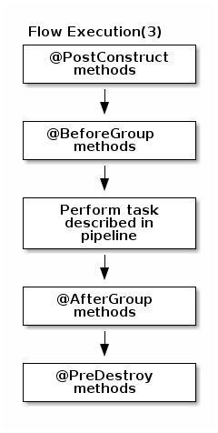
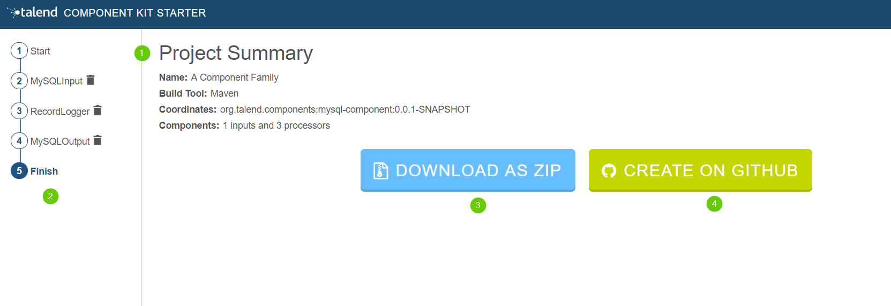
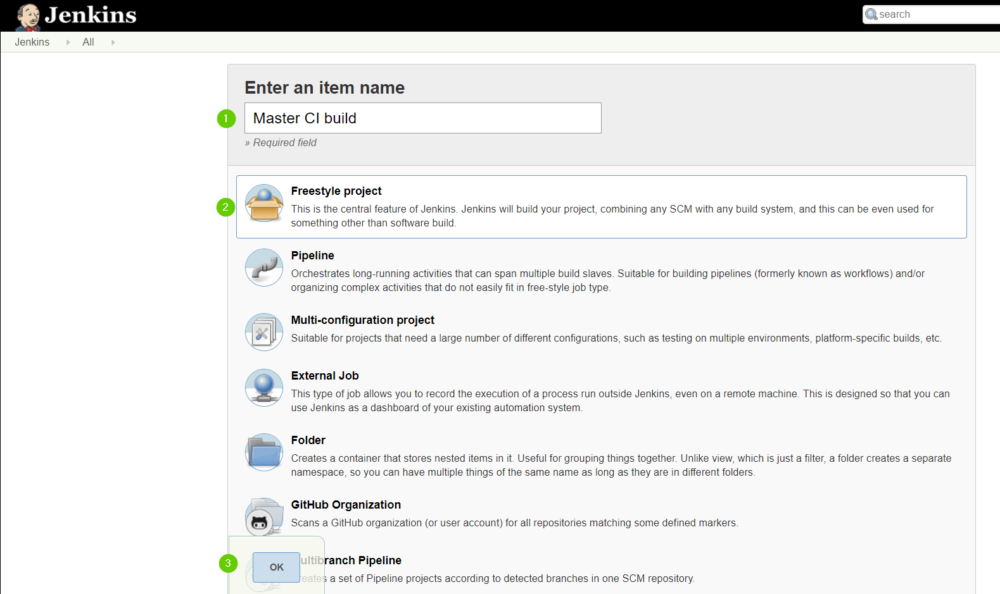
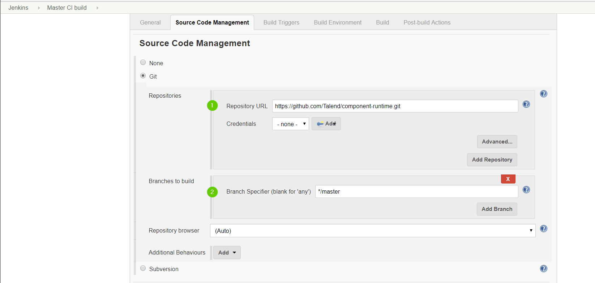
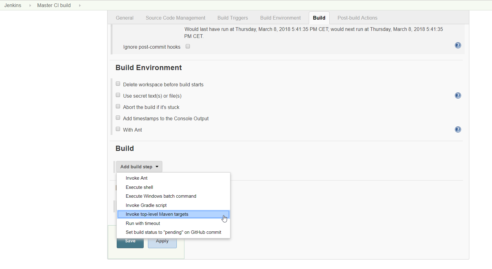

Getting Started with Talend Component Kit
What is a Talend Component
Basically, a component (or connector) is a functional piece that performs a single operation from a Talend application. For example, tMysqlInput extracts data from a MySQL table, tFilterRow filters data based on a condition.
Physically, a component is a set of files stored within a folder named after the component name. All native components are located in the <Talend Studio installation dir>/plugins/org.talend.designer.components.localprovider_[version]/components directory. Each component is a sub-folder under this directory, the folder name is the component name.
Graphically, a component is an icon that you can drag and drop from the Palette to the workspace.
Technically, a component is a snippet of generated Java code that is part of a Job which is a Java class. A Job is made of one or more components or connectors. The job name will be the class name and each component in a job will be translated to a snippet of generated Java code. The Java code will be compiled automatically when you save the job.
Talend Component Kit helps you creating your own components.
Talend Component Kit methodology
Talend Component Kit is a framework designed to simplify the development of components at two levels:
-
Runtime: Runtime is about injecting the specific component code into a job or pipeline. The framework helps unify as much as possible the code required to run in Data Integration (DI) and BEAM environments.
-
Graphical interface: The framework helps unify the code required to be able to render the component in a browser (web) or in the Eclipse-based Studio (SWT).
Before being able to develop new components, check the prerequisites to make sure that you have all you need to get started.
Developing new components using the framework includes:
-
Creating a project using the starter or the Talend IntelliJ plugin. This step allows to build the skeleton of the project. It consists in:
-
Defining the general configuration model for each component in your project
-
Generating and downloading the project archive from the starter
-
Compiling the project
-
-
Importing the compiled project in your IDE. This step is not required if you have generated the project using the IntelliJ plugin.
-
Implementing the components, including:
-
Registering the component by specifying its metadata: family, categories, version, icon, type, and name.
-
Defining the layout and configurable part of the components
-
Defining the partition mapper for Input components
-
Implementing the source logic for Input components
-
Defining the processor for Output components
-
-
Deploying the components to Talend Studio or Cloud applications
Some additional configuration steps can be necessary according to your requirements:
-
Defining services that can be reused in several components
Talend Component Kit Overview
Talend Component Kit is a toolkit based on Java and designed to simplify the development of components at two levels:
-
Runtime: Runtime is about injecting the specific component code into a job or pipeline. The framework helps unify as much as possible the code required to run in Data Integration (DI) and BEAM environments.
-
Graphical interface: The framework helps unify the code required to be able to render the component in a browser (web) or in the Eclipse-based Studio (SWT).
Component API
The component API is declarative (through annotations) to ensure it is:
-
Evolutive. It can get new features without breaking old code.
-
As static as possible.
Evolutive
Because it is fully declarative, any new API can be added iteratively without requiring any change to existing components.
For example, in the case of Beam potential evolution:
@ElementListener
public MyOutput onElement(MyInput data) {
return ...;
}would not be affected by the addition of the new Timer API, which can be used as follows:
@ElementListener
public MyOutput onElement(MyInput data,
@Timer("my-timer") Timer timer) {
return ...;
}Static
UI-friendly
The intent of the framework is to be able to fit in a Java UI as well as in a web UI.
It must be understood as colocalized and remote UI. The goal is to move as much as possible the logic to the UI side for UI-related actions. For example, validating a pattern, a size, and so on, should be done on the client side rather than on the server side. Being static encourages this practice.
Generic and specific
The processor API supports JsonObject as well as any custom model. The goal is to support generic component development that need to access configured "object paths", as well as specific components that rely on a defined path from the input.
A generic component can look like:
@ElementListener
public MyOutput onElement(JsonObject input) {
return ...;
}A specific component can look like (with MyInput a POJO):
@ElementListener
public MyOutput onElement(MyInput input) {
return ...;
}No runtime assumption
By design, the framework must run in DI (plain standalone Java program) and in Beam pipelines.
It is out of scope of the framework to handle the way the runtime serializes - if needed - the data.
For that reason, it is critical not to import serialization constraints to the stack. As an example, this is the reason why JsonObject is not an IndexedRecord from Avro.
Any serialization concern should either be hidden in the framework runtime (outside of the component developer scope) or in the runtime integration with the framework (for example, Beam integration).
In this context, JSON-P can be good compromise because it brings a powerful API with very few constraints.
Isolated
The components must be able to execute even if they have conflicting libraries. For that purpose, classloaders must be isolated. A component defines its dependencies based on a Maven format and is always bound to its own classloader.
REST
Consumable model
The definition payload is as flat as possible and strongly typed to ensure it can be manipulated by consumers. This way, consumers can add or remove fields with simple mapping rules, without any abstract tree handling.
The execution (runtime) configuration is the concatenation of framework metadata (only the version) and a key/value model of the instance of the configuration based on the definition properties paths for the keys. It enables consumers to maintain and work with the keys/values according to their need.
The framework not being responsible for any persistence, it is very important to make sure that consumers can handle it from end to end, with the ability to search for values (update a machine, update a port and so on) and keys (for example, a new encryption rule on key certificate).
Talend Component Kit is a metamodel provider (to build forms) and a runtime execution platform. It takes a configuration instance and uses it volatilely to execute a component logic. This implies it cannot own the data nor define the contract it has for these two endpoints and must let the consumers handle the data lifecycle (creation, encryption, deletion, and so on).
Fixed set of icons
Icons (@Icon) are based on a fixed set. Custom icons can be used but their display cannot be guaranteed. Components can be used in any environment and require a consistent look that cannot be guaranteed outside of the UI itself. Defining keys only is the best way to communicate this information.
| Once you know exactly how you will deploy your component in the Studio, then you can use `@Icon(value = CUSTOM, custom = "…") to use a custom icon file. |
General component execution logic
Each type of component has its own execution logic. The same basic logic is applied to all components of the same type, and is then extended to implement each component specificities. The project generated from the starter already contains the basic logic for each component.
Talend Component Kit framework relies on several primitive components.
All components can use @PostConstruct and @PreDestroy annotations to initialize or release some underlying resource at the beginning and the end of a processing.
In distributed environments, class constructor are called on cluster manager nodes. Methods annotated with @PostConstruct and @PreDestroy are called on worker nodes. Thus, partition plan computation and pipeline tasks are performed on different nodes.
|

-
The created task is a JAR file containing class information, which describes the pipeline (flow) that should be processed in cluster.
-
During the partition plan computation step, the pipeline is analyzed and split into stages. The cluster manager node instantiates mappers/processors, gets estimated data size using mappers, and splits created mappers according to the estimated data size.
All instances are then serialized and sent to the worker node. -
Serialized instances are received and deserialized. Methods annotated with
@PostConstructare called. After that, pipeline execution starts. The@BeforeGroupannotated method of the processor is called before processing the first element in chunk.
After processing the number of records estimated as chunk size, the@AfterGroupannotated method of the processor is called. Chunk size is calculated depending on the environment the pipeline is processed by. Once the pipeline is processed, methods annotated with@PreDestroyare called.
| All the methods managed by the framework must be public. Private methods are ignored. |


| The framework is designed to be as declarative as possible but also to stay extensible by not using fixed interfaces or method signatures. This allows to incrementally add new features of the underlying implementations. |
Setting up your environment
System prerequisites
In order to use Talend Component Kit, you need the following tools installed on your machine:
-
Java JDK 1.8.x. You can download it from Oracle website.
-
A build tool:
-
Apache Maven 3.5.4 is recommended to develop a component or the project itself. You can download it from Apache Maven website.
-
You can also use Gradle, but at the moment certain features are not supported, such as validations.
-
-
A Java Integrated Development Environment such as Eclipse or IntelliJ. IntelliJ is recommended as a Talend Component Kit plugin is available.
-
The version of your Studio is 7.0.
Installing the Talend Component Kit IntelliJ plugin
The Talend Component Kit IntelliJ plugin is a plugin for the IntelliJ Java IDE. It adds support for the Talend Component Kit project creation.
Main features:
-
Project generation support.
-
Internationalization completion for component configuration.
Installing the IntelliJ plugin
In the Intellij IDEA:
-
Go to File > Settings…
-
On the left panel, select Plugins.
-
Select Browse repositories…
-
Enter
Talendin the search field and chooseTalend Component Kit - Intellij Plugin. -
Select Install on the right.
-
Click the Restart IntelliJ IDEA button.
-
Confirm the IDEA restart to complete the installation.
The plugin is now installed on your IntelliJ IDEA. You can start using it.
About the internationalization completion
The plugin offers auto-completion for the configuration internationalization. The Talend component configuration lets you setup translatable and user-friendly labels for your configuration using a property file. Auto-completion in possible for the configuration keys and default values in the property file.
For example, you can internationalize a simple configuration class for a basic authentication that you use in your component:
@Checkable("basicAuth")
@DataStore("basicAuth")
@GridLayout({
@GridLayout.Row({ "url" }),
@GridLayout.Row({ "username", "password" }),
})
public class BasicAuthConfig implements Serializable {
@Option
private String url;
@Option
private String username;
@Option
@Credential
private String password;
}This configuration class contains three properties which you can attach a user-friendly label to.
For example, you can define a label like My server URL for the url option:
-
Create a
Messages.propertiesfile in the project resources and add the label to that file. The plugin automatically detects your configuration and provides you with key completion in the property file. -
Press Ctrl+Space to see the key suggestions.

Generating a project
Generating a project using the Component Kit starter
The Component Kit starter lets you design your components configuration and generates a ready-to-implement project structure.
This tutorial shows you how to use the Component Kit starter to generate new components for MySQL databases. Before starting, make sure that you have correctly setup your environment. See this section.
Configuring the project
Before being able to create components, you need to define the general settings of the project:
-
Create a folder on your local machine to store the resource files of the component you want to create. For example,
C:/my_components. -
Open the starter in the web browser of your choice.
-
Select your build tool. This tutorial uses Maven, but you can select Gradle instead.
-
Add the Talend Component Kit Testing facet to your project to automatically generate unit tests for the components created later in this tutorial.
-
Enter the Component Family of the components you want to develop in the project. This name must be a valid java name and is recommended to be capitalized, for example 'MySQL'.
Once you have implemented your components in the Studio, this name is displayed in the Palette to group all of the MySQL-related components you develop, and is also part of your component name. -
Select the Category of the components you want to create in the current project. As MySQL is a kind of database, select Databases in this tutorial.
This Databases category is used and displayed as the parent family of the MySQL group in the Palette of the Studio. -
Complete the project metadata by entering the Group, Artifact and Package.
-
Click the ADD A COMPONENT button to start designing your components.

Creating an Input component
When clicking ADD A COMPONENT in the starter, a new step that allows you to define a new component is created in your project.
The intent in this tutorial is to create an input component that connects to a MySQL database, executes a SQL query and gets the result.

-
Choose the component type. INPUT in this case.
-
Enter the component name. For example, MySQLInput.
-
Click CONFIGURATION MODEL. This button lets you specify the required configuration for the component.
-
For each parameter that you need to add, click the (+) button on the right panel. Enter the name and choose the type of the parameter, then click the tick button to save the changes.
In this tutorial, to be able to execute a SQL query on the Input MySQL database, the configuration requires the following parameters:+-
a connection URL (string)
-
a username (string)
-
a password (string)
-
the SQL query to be executed (string).
Closing the configuration panel on the right does not delete your configuration.
-
-
Specify whether the component issues a stream or not. In this tutorial, the MySQL input component created is an ordinary (non streaming) component. In this case, let the toggle button disabled.
-
Select the Record Type generated by the component. In this tutorial, select Generic because the component is designed to generate JSON records.
You can also select Custom to define a POJO that represents your records.
Your input component is now defined. You can add another component or generate and download your project.
Creating a Processor component
When clicking ADD A COMPONENT in the starter, a new step that allows you to define a new component is created in your project.
The intent in this tutorial is to create a simple processor component that receives a record, logs it and returns it at it is.

-
Choose the component type. PROCESSOR/OUTPUT in this case.
-
Enter the component name. For example, RecordLogger, as the processor created in this tutorial logs the records.
-
Specify the CONFIGURATION MODEL of the component. In this tutorial, the component doesn’t need any specific configuration. Skip this step.
-
Define the Input(s) of the component. For each input that you need to define, click ADD INPUT. In this tutorial, only one input is needed to receive the record to log.
-
Click the input name to access its configuration. You can change the name of the input and define its structure using a POJO. If you added several inputs, repeat this step for each one of them.
The input in this tutorial is a generic record. Enable the Generic option. -
Define the Output(s) of the component. For each output that you need to define, click ADD OUTPUT. In this tutorial, only one generic output is needed to return the received record.
Outputs can be configured the same way as inputs (see previous steps). -
Make sure to check the configuration of inputs and outputs as they are not set to Generic by default.
Your processor component is now defined. You can add another component or generate and download your project.
Creating an Output component
When clicking ADD A COMPONENT in the starter, a new step that allows you to define a new component is created in your project.
The intent in this tutorial is to create an output component that receives a record and inserts it into a MySQL database table.
| Output components are Processors without any output. In other words, the output is a processor that does not produce any records. |
-
Choose the component type. PROCESSOR/OUTPUT in this case.
-
Enter the component name. For example, MySQLOutput.
-
Click CONFIGURATION MODEL. This button lets you specify the required configuration for the component.
-
For each parameter that you need to add, click the (+) button on the right panel. Enter the name and choose the type of the parameter, then click the tick button to save the changes.
In this tutorial, to be able to insert a record in the output MySQL database, the configuration requires the following parameters:+-
a connection URL (string)
-
a username (string)
-
a password (string)
-
the name of the table to insert the record in (string).
Closing the configuration panel on the right does not delete your configuration.
-
-
Define the Input(s) of the component. For each input that you need to define, click ADD INPUT. In this tutorial, only one input is needed.
-
Click the input name to access its configuration. You can change the name of the input and define its structure using a POJO. If you added several inputs, repeat this step for each one of them.
The input in this tutorial is a generic record. Enable the Generic option. -
Do not create any output because the component does not produce any record. This is the only difference between an output an a processor component.
Your output component is now defined. You can add another component or generate and download your project.
Generating and downloading the final project
Once your project is configured and all the components you need are created, you can generate and download the final project. In this tutorial, the project was configured and three components of different types (input, processor and output) have been defined.
-
Click GO TO FINISH at the bottom of the page. You are redirected to a page that summarizes the project. On the left panel, you can also see all the components that you added to the project.
 -
Generate the project using one of the two options available:
-
Download it locally as a ZIP file using the DOWNLOAD AS ZIP button.
-
Create a Github repository and push the project to it using the CREATE ON GITHUB button.
-
In this tutorial, the project is downloaded to the local machine as a ZIP file.
Compiling and exploring the generated project files
Once the package is available on your machine, you can compile it using the build tool selected when configuring the project.
-
In the tutorial, Maven is the build tool selected for the project.
In the project directory, execute themvn packagecommand.
If you don’t have Maven installed on your machine, you can use the Maven wrapper provided in the generated project, by executing the./mvnw packagecommand. -
If you have created a Gradle project, you can compile it using the
gradle buildcommand or using the Gradle wrapper:./gradlew build.
The generated project code contains documentation that can guide and help you implementing the component logic. Import the project to your favorite IDE to start the implementation.
The next tutorial shows how to implement an Input component in details.
Generating a project using intelliJ plugin
Once the plugin installed, you can generate a component project.
-
Select File > New > Project.
-
In the New Project wizard, choose Talend Component and click Next.

The plugin loads the component starter and lets you design your components. For more information about the Talend Component Kit starter, check this tutorial.
-
Once your project is configured, select Next, then click Finish.
The project is automatically imported into the IDEA using the build tool that you have chosen.
Implementing components
Registering components
Before implementing a component logic and configuration, you need to specify the family and the category it belongs to, the component type and name, as well as its name and a few other generic parameters. This set of metadata, and more particularly the family, categories and component type, is mandatory to recognize and load the component to Talend Studio or Cloud applications.
Some of these parameters are handled at the project generation using the starter, but can still be accessed and updated later on.
Component family and categories
The family and category of a component is automatically written in the package-info.java of the component package, using the @Components annotation. By default, these parameters are already configured in this file when you import your project in your IDE. Their value correspond to what was defined during the project definition with the starter.
Multiple components can share the same family and category value, but the family + name pair must be unique for the system.
A component can belong to one family only and to one or several categories. If not specified, the category defaults to Misc.
The package-info.java also defines the component family icon, which is different from the component icon. You can learn how to customize this icon in this section.
Here is a sample package-info.java:
@Components(name = "my_component_family", categories = "My Category")
package org.talend.sdk.component.sample;
import org.talend.sdk.component.api.component.Components;Another example with an existing component:
@Components(name = "Salesforce", categories = {"Business", "Cloud"})
package org.talend.sdk.component.sample;
import org.talend.sdk.component.api.component.Components;Component icon and version
Components can require metadata to be integrated in Talend Studio or Cloud platforms.
Metadata is set on the component class and belongs to the org.talend.sdk.component.api.component package.
When you generate your project and import it in your IDE, icon and version both come with a default value.
-
@Icon: Sets an icon key used to represent the component. You can use a custom key with the
custom()method but the icon may not be rendered properly. The icon defaults to Star.
Learn how to set a custom icon for your component in this section. -
@Version: Sets the component version. 1 by default.
Learn how to manage different versions and migrations between your component versions in this section.
@Version(1)
@Icon(FILE_XML_O)
@PartitionMapper(name = "jaxbInput")
public class JaxbPartitionMapper implements Serializable {
// ...
}Defining a custom icon for a component or component family
Every component family and component needs to have a representative icon.
You can use one of the icons provided by the framework or you can use a custom icon.
-
For the component family the icon is defined in the
package-info.javafile. -
For the component itself, you need to declare the icon in the component class.
To use a custom icon, you need to have the icon file placed in the resources/icons folder of the project.
The icon file needs to have a name following the convention IconName_icon32.png, where you can replace IconName by the name of your choice.
@Icon(value = Icon.IconType.CUSTOM, custom = "IconName")Defining an input component logic
Input components are the components generally placed at the beginning of a Talend job. They are in charge of retrieving the data that will later be processed in the job.
An input component is primarily made of three distinct logics: - The execution logic of the component itself, defined through a partition mapper. - The configurable part of the component, defined through the mapper configuration. - The source logic defined through a producer.
Before implementing the component logic and defining its layout and configurable fields, make sure you have specified its basic metadata, as detailed in this document.
Defining a partition mapper
What is a partition mapper
A PartitionMapper is a component able to split itself to make the execution more efficient.
This concept is borrowed from big data and useful in this context only (BEAM executions).
The idea is to divide the work before executing it in order to reduce the overall execution time.
The process is the following:
-
The size of the data you work on is estimated. This part can be heuristic and not very precise.
-
From that size, the execution engine (runner for Beam) requests the mapper to split itself in N mappers with a subset of the overall work.
-
The leaf (final) mapper is used as a
Producer(actual reader) factory.
This kind of component must be Serializable to be distributable.
|
Implementing a partition mapper
A partition mapper requires three methods marked with specific annotations:
-
@Assessorfor the evaluating method -
@Splitfor the dividing method -
@Emitterfor theProducerfactory
@Assessor
The Assessor method returns the estimated size of the data related to the component (depending its configuration).
It must return a Number and must not take any parameter.
For example:
@Assessor
public long estimateDataSetByteSize() {
return ....;
}@Split
The Split method returns a collection of partition mappers and can take optionally a @PartitionSize long value as parameter, which is the requested size of the dataset per sub partition mapper.
For example:
@Split
public List<MyMapper> split(@PartitionSize final long desiredSize) {
return ....;
}Defining the producer method
TheProducer method defines the source logic of an input component. It handles the interaction with a physical source and produces input data for the processing flow.
A producer must have a @Producer method without any parameter. It is triggered by the @Emitter of the partition mapper and can return any data. It is defined in the <component_name>Source.java file:
@Producer
public MyData produces() {
return ...;
}Defining a processor or an output component logic
Processors and output components are the components in charge of reading, processing and transforming data in a Talend job, as well as passing it to its required destination.
Before implementing the component logic and defining its layout and configurable fields, make sure you have specified its basic metadata, as detailed in this document.
Defining a processor
What is a processor
A Processor is a component that converts incoming data to a different model.
A processor must have a method decorated with @ElementListener taking an incoming data and returning the processed data:
@ElementListener
public MyNewData map(final MyData data) {
return ...;
}Processors must be Serializable because they are distributed components.
If you just need to access data on a map-based ruleset, you can use JsonObject as parameter type.
From there, Talend Component Kit wraps the data to allow you to access it as a map. The parameter type is not enforced.
This means that if you know you will get a SuperCustomDto, then you can use it as parameter type. But for generic components that are reusable in any chain, it is highly encouraged to use JsonObject until you have an evaluation language-based processor that has its own way to access components.
For example:
@ElementListener
public MyNewData map(final JsonObject incomingData) {
String name = incomingData.getString("name");
int name = incomingData.getInt("age");
return ...;
}
// equivalent to (using POJO subclassing)
public class Person {
private String age;
private int age;
// getters/setters
}
@ElementListener
public MyNewData map(final Person person) {
String name = person.getName();
int age = person.getAge();
return ...;
}A processor also supports @BeforeGroup and @AfterGroup methods, which must not have any parameter and return void values. Any other result would be ignored.
These methods are used by the runtime to mark a chunk of the data in a way which is estimated good for the execution flow size.
Because the size is estimated, the size of a group can vary. It is even possible to have groups of size 1.
|
It is recommended to batch records, for performance reasons:
@BeforeGroup
public void initBatch() {
// ...
}
@AfterGroup
public void endBatch() {
// ...
}You can optimize the data batch processing by using the maxBatchSize parameter. This parameter is automatically implemented on the component when it is deployed to a Talend application. Only the logic needs to be implemented. Learn how to implement chunking/bulking in this document.
Defining multiple outputs
In some cases, you may need to split the output of a processor in two. A common example is to have "main" and "reject" branches where part of the incoming data are passed to a specific bucket to be processed later.
To do that, you can use @Output as replacement of the returned value:
@ElementListener
public void map(final MyData data, @Output final OutputEmitter<MyNewData> output) {
output.emit(createNewData(data));
}Alternatively, you can pass a string that represents the new branch:
@ElementListener
public void map(final MyData data,
@Output final OutputEmitter<MyNewData> main,
@Output("rejected") final OutputEmitter<MyNewDataWithError> rejected) {
if (isRejected(data)) {
rejected.emit(createNewData(data));
} else {
main.emit(createNewData(data));
}
}
// or
@ElementListener
public MyNewData map(final MyData data,
@Output("rejected") final OutputEmitter<MyNewDataWithError> rejected) {
if (isSuspicious(data)) {
rejected.emit(createNewData(data));
return createNewData(data); // in this case the processing continues but notifies another channel
}
return createNewData(data);
}Defining multiple inputs
Having multiple inputs is similar to having multiple outputs, except that an OutputEmitter wrapper is not needed:
@ElementListener
public MyNewData map(@Input final MyData data, @Input("input2") final MyData2 data2) {
return createNewData(data1, data2);
}@Input takes the input name as parameter. If no name is set, it defaults to the "main (default)" input branch. It is recommended to use the default branch when possible and to avoid naming branches according to the component semantic.
Processor components and batch processing
Depending on several requirements, including the system capacity and business needs, a processor can process records differently.
For example, for real-time or near-real time processing, it is more interesting to process small batches of data more often. On the other hand, in case of one-time processing, it is more optimal to adapt the way the component handles batches of data according to the system capacity.
By default, the runtime automatically estimates a group size that it considers good, according to the system capacity, to process the data. This group size can sometimes be too big and not optimal for your system to handle effectively and correctly.
Users can then customize this size from the component settings in Talend Studio, by specifying a maxBatchSize that adapts the size of each group of data to be processed.
| The estimated group size logic is automatically implemented when a component is deployed to a Talend application. Besides defining the @BeforeGroup and @AfterGroup logic detailed below, no action is required on the implementation side of the component. |
The component batch processes the data as follows:
-
Case 1 - No
maxBatchSizeis specified in the component configuration. The runtime estimates a group size of 4. Records are processed by groups of 4. -
Case 2 - The runtime estimates a group size of 4 but a
maxBatchSizeof 3 is specified in the component configuration. The system adapts the group size to 3. Records are processed by groups of 3.
Each group is processed as follows until there is no record left:
-
The
@BeforeGroupmethod resets a record buffer at the beginning of each group. -
The records of the group are assessed one by one and placed in the buffer as follows: The @ElementListener method tests if the buffer size is greater or equal to the defined
maxBatchSize. If it is, the records are processed. If not, then the current record is buffered. -
The previous step happens for all records of the group. Then the
@AfterGroupmethod tests if the buffer is empty.
You can define the following logic in the processor configuration:
import java.io.Serializable;
import java.util.ArrayList;
import java.util.Collection;
import javax.json.JsonObject;
import org.talend.sdk.component.api.processor.AfterGroup;
import org.talend.sdk.component.api.processor.BeforeGroup;
import org.talend.sdk.component.api.processor.ElementListener;
import org.talend.sdk.component.api.processor.Processor;
@Processor(name = "BulkOutputDemo")
public class BulkProcessor implements Serializable {
private Collection<JsonObject> buffer;
@BeforeGroup
public void begin() {
buffer = new ArrayList<>();
}
@ElementListener
public void bufferize(final JsonObject object) {
buffer.add(object);
}
@AfterGroup
public void commit() {
// save buffer records at once (bulk)
}
}You can learn more about processors in this document.
Defining an output
What is an output
An Output is a Processor that does not return any data.
Conceptually, an output is a data listener. It matches the concept of processor. Being the last component of the execution chain or returning no data makes your processor an output component:
@ElementListener
public void store(final MyData data) {
// ...
}Defining component parameters and configuration
The component configuration is defined in the <component_name>Configuration.java file of the package. It consists in defining the configurable part of the component that will be displayed in the UI.
To do that, you can specify parameters. When you import the project in your IDE, the parameters that you have specified in the starter are already present.
Parameter name
Components are configured using their constructor parameters. All parameters can be marked with the @Option property, which lets you give a name to them.
For the name to be correct, you must follow these guidelines:
-
Use a valid Java name.
-
Do not include any
.character in it. -
Do not start the name with a
$. -
Defining a name is optional. If you don’t set a specific name, it defaults to the bytecode name. This can require you to compile with a
-parameterflag to avoid ending up with names such asarg0,arg1, and so on.
| Option name | Valid |
|---|---|
myName |
|
my_name |
|
my.name |
|
$myName |
Parameter types
Parameter types can be primitives or complex objects with fields decorated with @Option exactly like method parameters.
| It is recommended to use simple models which can be serialized in order to ease serialized component implementations. |
For example:
class FileFormat implements Serializable {
@Option("type")
private FileType type = FileType.CSV;
@Option("max-records")
private int maxRecords = 1024;
}
@PartitionMapper(name = "file-reader")
public MyFileReader(@Option("file-path") final File file,
@Option("file-format") final FileFormat format) {
// ...
}Using this kind of API makes the configuration extensible and component-oriented, which allows you to define all you need.
The instantiation of the parameters is done from the properties passed to the component.
Mapping complex objects
The conversion from property to object uses the Dot notation.
For example, assuming the method parameter was configured with @Option("file"):
file.path = /home/user/input.csv
file.format = CSVmatches
public class FileOptions {
@Option("path")
private File path;
@Option("format")
private Format format;
}List case
Lists rely on an indexed syntax to define their elements.
For example, assuming that the list parameter is named files and that the elements are of the FileOptions type, you can define a list of two elements as follows:
files[0].path = /home/user/input1.csv
files[0].format = CSV
files[1].path = /home/user/input2.xml
files[1].format = EXCELMap case
Similarly to the list case, the map uses .key[index] and .value[index] to represent its keys and values:
// Map<String, FileOptions>
files.key[0] = first-file
files.value[0].path = /home/user/input1.csv
files.value[0].type = CSV
files.key[1] = second-file
files.value[1].path = /home/user/input2.xml
files.value[1].type = EXCEL// Map<FileOptions, String>
files.key[0].path = /home/user/input1.csv
files.key[0].type = CSV
files.value[0] = first-file
files.key[1].path = /home/user/input2.xml
files.key[1].type = EXCEL
files.value[1] = second-file| Avoid using the Map type. Instead, prefer configuring your component with an object if this is possible. |
Defining Constraints and validations on the configuration
You can use metadata to specify that a field is required or has a minimum size, and so on. This is done using the validation metadata in the org.talend.sdk.component.api.configuration.constraint package:
| API | Name | Parameter Type | Description | Supported Types | Metadata sample |
|---|---|---|---|---|---|
@org.talend.sdk.component.api.configuration.constraint.Max |
maxLength |
double |
Ensure the decorated option size is validated with a higher bound. |
CharSequence |
|
@org.talend.sdk.component.api.configuration.constraint.Min |
minLength |
double |
Ensure the decorated option size is validated with a lower bound. |
CharSequence |
|
@org.talend.sdk.component.api.configuration.constraint.Pattern |
pattern |
string |
Validate the decorated string with a javascript pattern (even into the Studio). |
CharSequence |
|
@org.talend.sdk.component.api.configuration.constraint.Max |
max |
double |
Ensure the decorated option size is validated with a higher bound. |
Number, int, short, byte, long, double, float |
|
@org.talend.sdk.component.api.configuration.constraint.Min |
min |
double |
Ensure the decorated option size is validated with a lower bound. |
Number, int, short, byte, long, double, float |
|
@org.talend.sdk.component.api.configuration.constraint.Required |
required |
- |
Mark the field as being mandatory. |
Object |
|
@org.talend.sdk.component.api.configuration.constraint.Max |
maxItems |
double |
Ensure the decorated option size is validated with a higher bound. |
Collection |
|
@org.talend.sdk.component.api.configuration.constraint.Min |
minItems |
double |
Ensure the decorated option size is validated with a lower bound. |
Collection |
|
@org.talend.sdk.component.api.configuration.constraint.Uniques |
uniqueItems |
- |
Ensure the elements of the collection must be distinct (kind of set). |
Collection |
|
When using the programmatic API, metadata is prefixed by tcomp::. This prefix is stripped in the web for convenience, and the table above uses the web keys.
|
Also note that these validations are executed before the runtime is started (when loading the component instance) and that the execution will fail if they don’t pass.
If it breaks your application, you can disable that validation on the JVM by setting the system property talend.component.configuration.validation.skip to true.
Marking a configuration as dataset or datastore
It is common to classify the incoming data. It is similar to tagging data with several types. Data can commonly be categorized as follows:
-
Datastore: The data you need to connect to the backend.
-
Dataset: A datastore coupled with the data you need to execute an action.
| API | Type | Description | Metadata sample |
|---|---|---|---|
o.t.s.c.api.configuration.type.DataSet |
dataset |
Mark a model (complex object) as being a dataset. |
|
o.t.s.c.api.configuration.type.DataStore |
datastore |
Mark a model (complex object) as being a datastore (connection to a backend). |
|
| The component family associated with a configuration type (datastore/dataset) is always the one related to the component using that configuration. |
Those configuration types can be composed to provide one configuration item. For example, a dataset type often needs a datastore type to be provided. A datastore type (that provides the connection information) is used to create a dataset type.
Those configuration types are also used at design time to create shared configurations that can be stored and used at runtime.
For example, in the case of a relational database that supports JDBC:
-
A datastore can be made of:
-
a JDBC URL
-
a username
-
a password.
-
-
A dataset can be made of:
-
a datastore (that provides the data required to connect to the database)
-
a table name
-
data.
-
The component server scans all configuration types and returns a configuration type index. This index can be used for the integration into the targeted platforms (Studio, web applications, and so on).
The configuration type index is represented as a flat tree that contains all the configuration types, which themselves are represented as nodes and indexed by ID.
Every node can point to other nodes. This relation is represented as an array of edges that provides the child IDs.
As an illustration, a configuration type index for the example above can be defined as follows:
{nodes: {
"idForDstore": { datastore:"datastore data", edges:[id:"idForDset"] },
"idForDset": { dataset:"dataset data" }
}
}Defining links between properties
If you need to define a binding between properties, you can use a set of annotations:
| API | Name | Description | Metadata Sample |
|---|---|---|---|
@o.t.s.c.api.configuration.condition.ActiveIf |
if |
If the evaluation of the element at the location matches value then the element is considered active, otherwise it is deactivated. |
|
@o.t.s.c.api.configuration.condition.ActiveIfs |
ifs |
Allows to set multiple visibility conditions on the same property. |
|
The target element location is specified as a relative path to the current location, using Unix path characters.
The configuration class delimiter is /.
The parent configuration class is specified by ...
Thus, ../targetProperty denotes a property, which is located in the parent configuration class and is named targetProperty.
When using the programmatic API, metadata is prefixed with tcomp::. This prefix is stripped in the web for convenience, and the previous table uses the web keys.
|
Adding hints about the rendering
In some cases, you may need to add metadata about the configuration to let the UI render that configuration properly.
For example, a password value that must be hidden and not a simple clear input box. For these cases - if you want to change the UI rendering - you can use a particular set of annotations:
| API | Description | Generated property metadata |
|---|---|---|
@o.t.s.c.api.configuration.ui.DefaultValue |
Provide a default value the UI can use - only for primitive fields. |
|
@o.t.s.c.api.configuration.ui.OptionsOrder |
Allows to sort a class properties. |
|
@o.t.s.c.api.configuration.ui.layout.AutoLayout |
Request the rendered to do what it thinks is best. |
|
@o.t.s.c.api.configuration.ui.layout.GridLayout |
Advanced layout to place properties by row, this is exclusive with |
|
@o.t.s.c.api.configuration.ui.layout.GridLayouts |
Allow to configure multiple grid layouts on the same class, qualified with a classifier (name) |
|
@o.t.s.c.api.configuration.ui.layout.HorizontalLayout |
Put on a configuration class it notifies the UI an horizontal layout is preferred. |
|
@o.t.s.c.api.configuration.ui.layout.VerticalLayout |
Put on a configuration class it notifies the UI a vertical layout is preferred. |
|
@o.t.s.c.api.configuration.ui.widget.Code |
Mark a field as being represented by some code widget (vs textarea for instance). |
|
@o.t.s.c.api.configuration.ui.widget.Credential |
Mark a field as being a credential. It is typically used to hide the value in the UI. |
|
@o.t.s.c.api.configuration.ui.widget.Structure |
Mark a List<String> or Map<String, String> field as being represented as the component data selector (field names generally or field names as key and type as value). |
|
@o.t.s.c.api.configuration.ui.widget.TextArea |
Mark a field as being represented by a textarea(multiline text input). |
|
When using the programmatic API, metadata is prefixed with tcomp::. This prefix is stripped in the web for convenience, and the previous table uses the web keys.
|
You can also check this example about masking credentials.
Target support should cover org.talend.core.model.process.EParameterFieldType but you need to ensure that the web renderer is able to handle the same widgets.
Internationalizing components
In common cases, you can store messages using a properties file in your component module to use internationalization.
This properties file must be stored in the same package as the related components and named Messages. For example, org.talend.demo.MyComponent uses org.talend.demo.Messages[locale].properties.
This file already exists when you import a project generated from the starter.
Default components keys
Out of the box components are internationalized using the same location logic for the resource bundle. The supported keys are:
| Name Pattern | Description |
|---|---|
${family}._displayName |
Display name of the family |
${family}.${category}._category |
Display name of the category |
${family}.${configurationType}.${name}._displayName |
Display name of a configuration type (dataStore or dataSet) |
${family}.${component_name}._displayName |
Display name of the component (used by the GUIs) |
${property_path}._displayName |
Display name of the option. |
${simple_class_name}.${property_name}._displayName |
Display name of the option using its class name. |
${enum_simple_class_name}.${enum_name}._displayName |
Display name of the |
${property_path}._placeholder |
Placeholder of the option. |
Example of configuration for a component named list and belonging to the memory family (@Emitter(family = "memory", name = "list")):
memory.list._displayName = Memory ListInternationalizing a configuration class
Configuration classes can be translated using the simple class name in the messages properties file. This is useful in case of common configurations shared by multiple components.
For example, if you have a configuration class as follows :
public class MyConfig {
@Option
private String host;
@Option
private int port;
}You can give it a translatable display name by adding ${simple_class_name}.${property_name}._displayName to Messages.properties under the same package as the configuration class.
MyConfig.host._displayName = Server Host Name
MyConfig.host._placeholder = Enter Server Host Name...
MyConfig.port._displayName = Server Port
MyConfig.port._placeholder = Enter Server Port...| If you have a display name using the property path, it overrides the display name defined using the simple class name. This rule also applies to placeholders. |
Managing component versions and migration
If some changes impact the configuration, they can be managed through a migration handler at the component level (enabling trans-model migration support).
The @Version annotation supports a migrationHandler method which migrates the incoming configuration to the current model.
For example, if the filepath configuration entry from v1 changed to location in v2, you can remap the value in your MigrationHandler implementation.
A best practice is to split migrations into services that you can inject in the migration handler (through constructor) rather than managing all migrations directly in the handler. For example:
// full component code structure skipped for brievity, kept only migration part
@Version(value = 3, migrationHandler = MyComponent.Migrations.class)
public class MyComponent {
// the component code...
private interface VersionConfigurationHandler {
Map<String, String> migrate(Map<String, String> incomingData);
}
public static class Migrations {
private final List<VersionConfigurationHandler> handlers;
// VersionConfigurationHandler implementations are decorated with @Service
public Migrations(final List<VersionConfigurationHandler> migrations) {
this.handlers = migrations;
this.handlers.sort(/*some custom logic*/);
}
@Override
public Map<String, String> migrate(int incomingVersion, Map<String, String> incomingData) {
Map<String, String> out = incomingData;
for (MigrationHandler handler : handlers) {
out = handler.migrate(out);
}
}
}
}What is important to notice in this snippet is the fact that you can organize your migrations the way that best fits your component.
If you need to apply migrations in a specific order, make sure that they are sorted.
|
Consider this API as a migration callback rather than a migration API. Adjust the migration code structure you need behind the MigrationHandler, based on your component requirements, using service injection.
|
Talend Component Kit best practices
Organizing your code
Some recommendations apply to the way component packages are organized:
-
Make sure to create a
package-info.java filewith the component family/categories at the root of your component package:
@Components(family = "jdbc", categories = "Database")
package org.talend.sdk.component.jdbc;
import org.talend.sdk.component.api.component.Components;-
Create a package for the configuration.
-
Create a package for the actions.
-
Create a package for the component and one sub-package by type of component (input, output, processors, and so on).
Configuring components
Serializing your configuration
It is recommended to serialize your configuration in order to be able to pass it through other components.
Input and output components
When building a new component, the first step is to identify the way it must be configured.
The two main concepts are:
-
The DataStore which is the way you can access the backend.
-
The DataSet which is the way you interact with the backend.
For example:
| Example description | DataStore | DataSet |
|---|---|---|
Accessing a relational database like MySQL |
JDBC driver, URL, username, password |
Query to execute, row mapper, and so on. |
Accessing a file system |
File pattern (or directory + file extension/prefix/…) |
File format, buffer size, and so on. |
It is common to have the dataset including the datastore, because both are required to work. However, it is recommended to replace this pattern by defining both dataset and datastore in a higher level configuration model. For example:
@DataSet
public class MyDataSet {
// ...
}
@DataStore
public class MyDataStore {
// ...
}
public class MyComponentConfiguration {
@Option
private MyDataSet dataset;
@Option
private MyDataStore datastore;
}About actions
Input and output components are particular because they can be linked to a set of actions. It is recommended to wire all the actions you can apply to ensure the consumers of your component can provide a rich experience to their users.
The most common actions are the following ones:
| Type | Action | Description | Configuration example | Action example |
|---|---|---|---|---|
DataStore |
|
Exposes a way to ensure the datastore/connection works |
|
|
Processor components
Configuring processor components is simpler than configuring input and output components because it is specific for each component. For example, a mapper takes the mapping between the input and output models:
public class MappingConfiguration {
@Option
private Map<String, String> fieldsMapping;
@Option
private boolean ignoreCase;
//...
}Handling UI interactions
It is recommended to provide as much information as possible to let the UI work with the data during its edition.
Validations
Light validations
Light validations are all the validations you can execute on the client side. They are listed in the UI hint section.
Use light validations first before going with custom validations because they are more efficient.
Custom validations
Custom validations enforce custom code to be executed, they are more heavy to process, so prefer using light validations when possible.
Define an action with the parameters needed for the validation and link the option you want to validate to this action. For example, to validate a dataset for a JDBC driver:
// ...
public class JdbcDataStore
implements Serializable {
@Option
@Validable("driver")
private String driver;
// ...
}
@AsyncValidation("driver")
public ValidationResult validateDriver(@Option("value") String driver) {
if (findDriver(driver) != null) {
return new ValidationResult(Status.OK, "Driver found");
}
return new ValidationResult(Status.KO, "Driver not found");
}You can also define a Validable class and use it to validate a form by setting it on your whole configuration:
// Note: some parts of the API were removed for clarity
public class MyConfiguration {
// a lot of @Options
}
public MyComponent {
public MyComponent(@Validable("configuration") MyConfiguration config) {
// ...
}
//...
}
@AsyncValidation("configuration")
public ValidationResult validateDriver(@Option("value") MyConfiguration configuration) {
if (isValid(configuration)) {
return new ValidationResult(Status.OK, "Configuration valid");
}
return new ValidationResult(Status.KO, "Driver not valid ${because ...}");
}
The parameter binding of the validation method uses the same logic as the component configuration injection. Therefore, the @Option method specifies the prefix to use to reference a parameter.It is recommended to use @Option("value") until you know exactly why you don’t use it. This way, the consumer can match the configuration model and just prefix it with value. to send the instance to validate.
|
Completion
It can be handy and user-friendly to provide completion on some fields. For example, to define completion for available drivers:
// ...
public class JdbcDataStore
implements Serializable {
@Option
@Completable("driver")
private String driver;
// ...
}
@Completion("driver")
public CompletionList findDrivers() {
return new CompletionList(findDriverList());
}Component representation
Each component must have its own icon:
@Icon(Icon.IconType.DB_INPUT)
@PartitionMapper(family = "jdbc", name = "input")
public class JdbcPartitionMapper
implements Serializable {
}| You can use talend.surge.sh/icons/ to find the icon you want to use. |
Enforcing versioning on components
It is recommended to enforce the version of your component, event though it is not mandatory for the first version.
@Version(1)
@PartitionMapper(family = "jdbc", name = "input")
public class JdbcPartitionMapper
implements Serializable {
}If you break a configuration entry in a later version; make sure to:
-
Upgrade the version.
-
Support a migration of the configuration.
@Version(value = 2, migrationHandler = JdbcPartitionMapper.Migrations.class)
@PartitionMapper(family = "jdbc", name = "input")
public class JdbcPartitionMapper
implements Serializable {
public static class Migrations implements MigrationHandler {
// implement your migration
}
}Building components with Maven
To develop new components, Talend Component Kit requires a build tool in which you will import the component project generated from the starter. With this build tool, you will also be able to implement the logic of your component and to install and deploy it to Talend applications. A Talend Component Kit plugin is available for each of the supported build tools.
talend-component-maven-plugin helps you write components that match best practices and generate transparently metadata used by Talend Studio.
You can use it as follows:
<plugin>
<groupId>org.talend.sdk.component</groupId>
<artifactId>talend-component-maven-plugin</artifactId>
<version>${component.version}</version>
</plugin>This plugin is also an extension so you can declare it in your build/extensions block as:
<extension>
<groupId>org.talend.sdk.component</groupId>
<artifactId>talend-component-maven-plugin</artifactId>
<version>${component.version}</version>
</extension>Used as an extension, the dependencies, validate and documentation goals will be set up.
Dependencies
The first goal is a shortcut for the maven-dependency-plugin. It creates the TALEND-INF/dependencies.txt file with the compile and runtime dependencies, allowing the component to use it at runtime:
<plugin>
<groupId>org.talend.sdk.component</groupId>
<artifactId>talend-component-maven-plugin</artifactId>
<version>${component.version}</version>
<executions>
<execution>
<id>talend-dependencies</id>
<goals>
<goal>dependencies</goal>
</goals>
</execution>
</executions>
</plugin>Validate
This goal helps you validate the common programming model of the component. To activate it, you can use following execution definition:
<plugin>
<groupId>org.talend.sdk.component</groupId>
<artifactId>talend-component-maven-plugin</artifactId>
<version>${component.version}</version>
<executions>
<execution>
<id>talend-component-validate</id>
<goals>
<goal>validate</goal>
</goals>
</execution>
</executions>
</plugin>It is bound to the process-classes phase by default. When executed, it performs several validations that can be disabled by setting the corresponding flags to false in the <configuration> block of the execution:
| Name | Description | Default |
|---|---|---|
validateInternationalization |
Validates that resource bundles are presents and contain commonly used keys (for example, |
true |
validateModel |
Ensures that components pass validations of the |
true |
validateSerializable |
Ensures that components are |
true |
validateMetadata |
Ensures that components have an |
true |
validateDataStore |
Ensures that any |
true |
validateComponent |
Ensures that the native programming model is respected. You can disable it when using another programming model like Beam. |
true |
validateActions |
Validates action signatures for actions not tolerating dynamic binding ( |
true |
validateFamily |
Validates the family by verifying that the package containing the |
true |
validateDocumentation |
Ensures that all components and |
true |
validateLayout |
Ensures that the layout is referencing existing options and properties. |
true |
validateOptionNames |
Ensures that the option names are compliant with the framework. It is highly recommended and safer to keep it set to |
true |
Documentation
This goal generates an Asciidoc file documenting your component from the configuration model (@Option) and the @Documentation property that you can add to options and to the component itself.
<plugin>
<groupId>org.talend.sdk.component</groupId>
<artifactId>talend-component-maven-plugin</artifactId>
<version>${component.version}</version>
<executions>
<execution>
<id>talend-component-documentation</id>
<goals>
<goal>asciidoc</goal>
</goals>
</execution>
</executions>
</plugin>| Name | Description | Default |
|---|---|---|
level |
Level of the root title. |
2 ( |
output |
Output folder path. It is recommended to keep it to the default value. |
|
formats |
Map of the renderings to do. Keys are the format ( |
- |
attributes |
Map of asciidoctor attributes when formats is set. |
- |
templateDir / templateEngine |
Template configuration for the rendering. |
- |
title |
Document title. |
${project.name} |
attachDocumentations |
Allows to attach (and deploy) the documentations ( |
true |
If you use the plugin as an extension, you can add the talend.documentation.htmlAndPdf property and set it to true in your project to automatically get HTML and PDF renderings of the documentation.
|
Rendering your documentation
To render the generated documentation in HTML or PDF, you can use the Asciidoctor Maven plugin (or Gradle equivalent). You can configure both executions if you want both HTML and PDF renderings.
Make sure to execute the rendering after the documentation generation.
HTML rendering
If you prefer a HTML rendering, you can configure the following execution in the asciidoctor plugin. The example below:
-
Generates the components documentation in
target/classes/TALEND-INF/documentation.adoc. -
Renders the documentation as an HTML file stored in
target/documentation/documentation.html.
<plugin> (1)
<groupId>org.talend.sdk.component</groupId>
<artifactId>talend-component-maven-plugin</artifactId>
<version>${talend-component-kit.version}</version>
<executions>
<execution>
<id>documentation</id>
<phase>prepare-package</phase>
<goals>
<goal>asciidoc</goal>
</goals>
</execution>
</executions>
</plugin>
<plugin> (2)
<groupId>org.asciidoctor</groupId>
<artifactId>asciidoctor-maven-plugin</artifactId>
<version>1.5.6</version>
<executions>
<execution>
<id>doc-html</id>
<phase>prepare-package</phase>
<goals>
<goal>process-asciidoc</goal>
</goals>
<configuration>
<sourceDirectory>${project.build.outputDirectory}/TALEND-INF</sourceDirectory>
<sourceDocumentName>documentation.adoc</sourceDocumentName>
<outputDirectory>${project.build.directory}/documentation</outputDirectory>
<backend>html5</backend>
</configuration>
</execution>
</executions>
</plugin>PDF rendering
If you prefer a PDF rendering, you can configure the following execution in the asciidoctor plugin:
<plugin>
<groupId>org.asciidoctor</groupId>
<artifactId>asciidoctor-maven-plugin</artifactId>
<version>1.5.6</version>
<executions>
<execution>
<id>doc-html</id>
<phase>prepare-package</phase>
<goals>
<goal>process-asciidoc</goal>
</goals>
<configuration>
<sourceDirectory>${project.build.outputDirectory}/TALEND-INF</sourceDirectory>
<sourceDocumentName>documentation.adoc</sourceDocumentName>
<outputDirectory>${project.build.directory}/documentation</outputDirectory>
<backend>pdf</backend>
</configuration>
</execution>
</executions>
<dependencies>
<dependency>
<groupId>org.asciidoctor</groupId>
<artifactId>asciidoctorj-pdf</artifactId>
<version>1.5.0-alpha.16</version>
</dependency>
</dependencies>
</plugin>Including the documentation into a document
If you want to add some more content or a title, you can include the generated document into
another document using Asciidoc include directive.
For example:
= Super Components
Super Writer
:toc:
:toclevels: 3
:source-highlighter: prettify
:numbered:
:icons: font
:hide-uri-scheme:
:imagesdir: images
include::{generated_doc}/documentation.adoc[]To be able to do that, you need to pass the generated_doc attribute to the plugin. For example:
<plugin>
<groupId>org.asciidoctor</groupId>
<artifactId>asciidoctor-maven-plugin</artifactId>
<version>1.5.6</version>
<executions>
<execution>
<id>doc-html</id>
<phase>prepare-package</phase>
<goals>
<goal>process-asciidoc</goal>
</goals>
<configuration>
<sourceDirectory>${project.basedir}/src/main/asciidoc</sourceDirectory>
<sourceDocumentName>my-main-doc.adoc</sourceDocumentName>
<outputDirectory>${project.build.directory}/documentation</outputDirectory>
<backend>html5</backend>
<attributes>
<generated_adoc>${project.build.outputDirectory}/TALEND-INF</generated_adoc>
</attributes>
</configuration>
</execution>
</executions>
</plugin>This is optional but allows to reuse Maven placeholders to pass paths, which can be convenient in an automated build.
You can find more customization options on Asciidoctor website.
Testing a component web rendering
Testing the rendering of your component configuration into the Studio requires deploying the component in Talend Studio. Refer to the Studio documentation.
In the case where you need to deploy your component into a Cloud (web) environment, you can test its web rendering by using the web goal of the plugin:
-
Run the
mvn talend-component:webcommand. -
Open the following URL in a web browser:
localhost:8080. -
Select the component form you want to see from the treeview on the left. The selected form is displayed on the right.
Two parameters are available with the plugin:
-
serverPort, which allows to change the default port (8080) of the embedded server. -
serverArguments, that you can use to pass Meecrowave options to the server. Learn more about that configuration at openwebbeans.apache.org/meecrowave/meecrowave-core/cli.html.
| Make sure to install the artifact before using this command because it reads the component JAR from the local Maven repository. |
Generating inputs or outputs
The Mojo generate (Maven plugin goal) of the same plugin also embeds a generator that you can use to bootstrap any input or output component:
<plugin>
<groupId>org.talend.sdk.component</groupId>
<artifactId>talend-component-maven-plugin</artifactId>
<version>${talend-component.version}</version>
<executions>
<execution> (1)
<id>generate-input</id>
<phase>generate-sources</phase>
<goals>
<goal>generate</goal>
</goals>
<configuration>
<type>input</type>
</configuration>
</execution>
<execution> (2)
<id>generate-output</id>
<phase>generate-sources</phase>
<goals>
<goal>generate</goal>
</goals>
<configuration>
<type>output</type>
</configuration>
</execution>
</executions>
</plugin>| 1 | The first execution generates an input (partition mapper + emitter). |
| 2 | the second execution generates an output. |
It is intended to be used from the command line (or IDE Maven integration) as follows:
$ mvn talend-component:generate \
-Dtalend.generator.type=[input|output] \ (1)
[-Dtalend.generator.classbase=com.test.MyComponent] \ (2)
[-Dtalend.generator.family=my-family] \ (3)
[-Dtalend.generator.pom.read-only=false] (4)| 1 | Select the type of component you want: input to generate a mapper and an emitter, or output to generate an output processor. |
| 2 | Set the class name base (automatically suffixed by the component type). If not set, the package is guessed and the classname is based on the basedir name. |
| 3 | Set the component family to use. If not specified, it defaults to the basedir name and removes "component[s]" from it. for example, my-component leads to my as family, unless it is explicitly set. |
| 4 | Specify if the generator needs to add component-api to the POM, if not already there. If you already added it, you can set it to false directly in the POM. |
For this command to work, you need to register the plugin as follows:
<plugin>
<groupId>org.talend.sdk.component</groupId>
<artifactId>talend-component-maven-plugin</artifactId>
<version>${talend-component.version}</version>
</plugin>Talend Component Archive
Component ARchive (.car) is the way to bundle a component to share it in the Talend ecosystem. It is a plain Java ARchive (.jar) containing a metadata file and a nested Maven repository containing the component and its depenencies.
mvn talend-component:carThis command creates a .car file in your build directory. This file can be shared on Talend platforms.
This CAR is executable and exposes the studio-deploy command which takes
a Talend Studio home path as parameter. When executed, it installs the dependencies into the Studio and registers the component in your instance. For example:
# for a studio
java -jar mycomponent.car studio-deploy /path/to/my/studio
or
java -jar mycomponent.car studio-deploy --location /path/to/my/studio
# for a m2 provisioning
java -jar mycomponent.car maven-deploy /path/to/.m2/repository
or
java -jar mycomponent.car maven-deploy --location /path/to/.m2/repositoryYou can also upload the dependencies to your Nexus server using the following command:
java -jar mycomponent.car deploy-to-nexus --url <nexus url> --repo <repository name> --user <username> --pass <password> --threads <parallel threads number> --dir <temp directory>In this command, Nexus URL and repository name are mandatory arguments. All other arguments are optional. If arguments contain spaces or special symbols, you need to quote the whole value of the argument. For example:
--pass "Y0u will \ not G4iess i' ^"Building components with Gradle
To develop new components, Talend Component Kit requires a build tool in which you will import the component project generated from the starter. With this build tool, you will also be able to implement the logic of your component and to install and deploy it to Talend applications. A Talend Component Kit plugin is available for each of the supported build tools.
gradle-talend-component helps you write components that match the best practices. It is inspired from the Maven plugin and adds the ability to generate automatically the dependencies.txt file used by the SDK to build the component classpath. For more information on the configuration, refer to the Maven properties matching the attributes.
You can use it as follows:
buildscript {
repositories {
mavenLocal()
mavenCentral()
}
dependencies {
classpath "org.talend.sdk.component:gradle-talend-component:${talendComponentVersion}"
}
}
apply plugin: 'org.talend.sdk.component'
apply plugin: 'java'
// optional customization
talendComponentKit {
// dependencies.txt generation, replaces maven-dependency-plugin
dependenciesLocation = "TALEND-INF/dependencies.txt"
boolean skipDependenciesFile = false;
// classpath for validation utilities
sdkVersion = "${talendComponentVersion}"
apiVersion = "${talendComponentApiVersion}"
// documentation
skipDocumentation = false
documentationOutput = new File(....)
documentationLevel = 2 // first level will be == in the generated adoc
documentationTitle = 'My Component Family' // default to project name
documentationFormats = [:] // adoc attributes
documentationFormats = [:] // renderings to do
// validation
skipValidation = false
validateFamily = true
validateSerializable = true
validateInternationalization = true
validateModel = true
validateOptionNames = true
validateMetadata = true
validateComponent = true
validateDataStore = true
validateDataSet = true
validateActions = true
// web
serverArguments = []
serverPort = 8080
// car
carOutput = new File(....)
carMetadata = [:] // custom meta (string key-value pairs)
}Wrapping a Beam I/O
Limitations
This part is limited to specific kinds of Beam PTransform:
-
PTransform<PBegin, PCollection<?>>for inputs. -
PTransform<PCollection<?>, PDone>for outputs. Outputs must use a single (composite or not)DoFnin theirapplymethod.
Wrapping an input
To illustrate the input wrapping, this procedure uses the following input as a starting point (based on existing Beam inputs):
@AutoValue
public abstract [static] class Read extends PTransform<PBegin, PCollection<String>> {
// config
@Override
public PCollection<String> expand(final PBegin input) {
return input.apply(
org.apache.beam.sdk.io.Read.from(new BoundedElasticsearchSource(this, null)));
}
// ... other transform methods
}To wrap the Read in a framework component, create a transform delegating to that Read with at least a @PartitionMapper annotation and using @Option constructor injections to configure the component. Also make sure to follow the best practices and to specify @Icon and @Version.
@PartitionMapper(family = "myfamily", name = "myname")
public class WrapRead extends PTransform<PBegin, PCollection<String>> {
private PTransform<PBegin, PCollection<String>> delegate;
public WrapRead(@Option("dataset") final WrapReadDataSet dataset) {
delegate = TheIO.read().withConfiguration(this.createConfigurationFrom(dataset));
}
@Override
public PCollection<String> expand(final PBegin input) {
return delegate.expand(input);
}
// ... other methods like the mapping with the native configuration (createConfigurationFrom)
}Wrapping an output
To illustrate the output wrapping, this procedure uses the following output as a starting point (based on existing Beam outputs):
@AutoValue
public abstract [static] class Write extends PTransform<PCollection<String>, PDone> {
// configuration withXXX(...)
@Override
public PDone expand(final PCollection<String> input) {
input.apply(ParDo.of(new WriteFn(this)));
return PDone.in(input.getPipeline());
}
// other methods of the transform
}You can wrap this output exactly the same way you wrap an input, but using @Processor instead of:
@Processor(family = "myfamily", name = "myname")
public class WrapWrite extends PTransform<PCollection<String>, PDone> {
private PTransform<PCollection<String>, PDone> delegate;
public WrapWrite(@Option("dataset") final WrapWriteDataSet dataset) {
delegate = TheIO.write().withConfiguration(this.createConfigurationFrom(dataset));
}
@Override
public PDone expand(final PCollection<String> input) {
return delegate.expand(input);
}
// ... other methods like the mapping with the native configuration (createConfigurationFrom)
}Tip
Note that the org.talend.sdk.component.runtime.beam.transform.DelegatingTransform class fully delegates the "expansion" to another transform. Therefore, you can extend it and implement the configuration mapping:
@Processor(family = "beam", name = "file")
public class BeamFileOutput extends DelegatingTransform<PCollection<String>, PDone> {
public BeamFileOutput(@Option("output") final String output) {
super(TextIO.write()
.withSuffix("test")
.to(FileBasedSink.convertToFileResourceIfPossible(output)));
}
}Advanced
In terms of classloading, when you write an I/O, the Beam SDK Java core stack is assumed as provided in Talend Component Kit runtime. This way, you don’t need to include it in the compile scope, it would be ignored anyway.
Coder
If you need a JSonCoder, you can use the org.talend.sdk.component.runtime.beam.factory.service.PluginCoderFactory service,
which gives you access to the JSON-P and JSON-B coders.
There is also an Avro coder, which uses the FileContainer. It ensures it
is self-contained for IndexedRecord and it does not requireas the default Apache Beam AvroCoderto set the schema when creating a pipeline.
It consumes more space and therefore is slightly slower, but it is fine for DoFn, since it does not rely on serialization in most cases.
See org.talend.sdk.component.runtime.beam.transform.avro.IndexedRecordCoder.
JsonObject to IndexedRecord
The mainstream model is JsonObject but it is common to have a legacy system using
IndexedRecord. To mitigate the transition, you can use the following PTransforms:
-
IndexedRecordToJson: to convert anIndexedRecordto aJsonObject. -
JsonToIndexedRecord: to convert aJsonObjectto anIndexedRecord. -
SchemalessJsonToIndexedRecord: to convert aJsonObjectto anIndexedRecordwith AVRO schema inference.
Sample
@Version
@Icon(Icon.IconType.KAFKA)
@Emitter(name = "Input")
@AllArgsConstructor
@Documentation("Kafka Input")
public class KafkaInput extends PTransform<PBegin, PCollection<JsonObject>> { (1)
private final InputConfiguration configuration;
private final JsonBuilderFactory builder;
private final PluginCoderFactory coderFactory;
private KafkaIO.Read<byte[], byte[]> delegate() {
final KafkaIO.Read<byte[], byte[]> read = KafkaIO.<byte[], byte[]> read()
.withBootstrapServers(configuration.getBootstrapServers())
.withTopics(configuration.getTopics().stream().map(InputConfiguration.Topic::getName).collect(toList()))
.withKeyDeserializer(ByteArrayDeserializer.class).withValueDeserializer(ByteArrayDeserializer.class);
if (configuration.getMaxResults() > 0) {
return read.withMaxNumRecords(configuration.getMaxResults());
}
return read;
}
@Override (2)
public PCollection<JsonObject> expand(final PBegin pBegin) {
final PCollection<KafkaRecord<byte[], byte[]>> kafkaEntries = pBegin.getPipeline().apply(delegate());
return kafkaEntries.apply(ParDo.of(new RecordToJson(builder))).setCoder(coderFactory.jsonp()); (3)
}
@AllArgsConstructor
private static class RecordToJson extends DoFn<KafkaRecord<byte[], byte[]>, JsonObject> {
private final JsonBuilderFactory builder;
@ProcessElement
public void onElement(final ProcessContext context) {
context.output(toJson(context.element()));
}
private JsonObject toJson(final KafkaRecord<byte[], byte[]> element) {
return builder.createObjectBuilder().add("key", new String(element.getKV().getKey()))
.add("value", new String(element.getKV().getValue())).build();
}
}
}| 1 | The PTransform generics define that the component is an input (PBegin marker). |
| 2 | The expand method chains the native I/O with a custom mapper (RecordToJson). |
| 3 | The mapper uses the JSON-P coder automatically created from the contextual component. |
Because the Beam wrapper does not respect the standard Talend Component Kit programming model ( for example, there is no @Emitter), you need to set the <talend.validation.component>false</talend.validation.component> property in your pom.xml file (or equivalent for Gradle) to skip the component programming model validations of the framework.
Component Loading
Talend Component scanning is based on plugins. To make sure that plugins can be developed in parallel and avoid conflicts, they need to be isolated (component or group of components in a single jar/plugin).
Multiple options are available:
-
Graph classloading: this option allows you to link the plugins and dependencies together dynamically in any direction.
For example, the graph classloading can be illustrated by OSGi containers. -
Tree classloading: a shared classloader inherited by plugin classloaders. However, plugin classloader classes are not seen by the shared classloader, nor by other plugins.
For example, the tree classloading is commonly used by Servlet containers where plugins are web applications. -
Flat classpath: listed for completeness but rejected by design because it doesn’t comply with this requirement.
In order to avoid much complexity added by this layer, Talend Component Kit relies on a tree classloading. The advantage is that you don’t need to define the relationship with other plugins/dependencies, because it is built-in.
Here is a representation of this solution:

The shared area contains Talend Component Kit API, which only contains by default the classes shared by the plugins.
Then, each plugin is loaded with its own classloader and dependencies.
Packaging a plugin
| This section explains the overall way to handle dependencies but the Talend Maven plugin provides a shortcut for that. |
A plugin is a JAR file that was enriched with the list of its dependencies. By default, Talend Component Kit runtime is able to read the output of maven-dependency-plugin in TALEND-INF/dependencies.txt. You just need to make sure that your component defines the following plugin:
<plugin>
<groupId>org.apache.maven.plugins</groupId>
<artifactId>maven-dependency-plugin</artifactId>
<version>3.0.2</version>
<executions>
<execution>
<id>create-TALEND-INF/dependencies.txt</id>
<phase>process-resources</phase>
<goals>
<goal>list</goal>
</goals>
<configuration>
<outputFile>${project.build.outputDirectory}/TALEND-INF/dependencies.txt</outputFile>
</configuration>
</execution>
</executions>
</plugin>Once build, check the JAR file and look for the following lines:
$ unzip -p target/mycomponent-1.0.0-SNAPSHOT.jar TALEND-INF/dependencies.txt
The following files have been resolved:
org.talend.sdk.component:component-api:jar:1.0.0-SNAPSHOT:provided
org.apache.geronimo.specs:geronimo-annotation_1.3_spec:jar:1.0:provided
org.superbiz:awesome-project:jar:1.2.3:compile
junit:junit:jar:4.12:test
org.hamcrest:hamcrest-core:jar:1.3:testWhat is important to see is the scope related to the artifacts:
-
The APIs (
component-apiandgeronimo-annotation_1.3_spec) areprovidedbecause you can consider them to be there when executing (they come with the framework). -
Your specific dependencies (
awesome-projectin the example above) are marked ascompile: they are included as needed dependencies by the framework (note that usingruntimeworks too). -
the other dependencies are ignored. For example,
testdependencies.
Packaging an application
Even if a flat classpath deployment is possible, it is not recommended because it would then reduce the capabilities of the components.
Dependencies
The way the framework resolves dependencies is based on a local Maven repository layout. As a quick reminder, it looks like:
.
groupId1
artifactId1
version1
artifactId1-version1.jar
version2
artifactId1-version2.jar
groupId2
artifactId2
version1
artifactId2-version1.jarThis is all the layout the framework uses. The logic converts t-uple {groupId, artifactId, version, type (jar)} to the path in the repository.
Talend Component Kit runtime has two ways to find an artifact:
-
From the file system based on a configured Maven 2 repository.
-
From a fat JAR (uber JAR) with a nested Maven repository under
MAVEN-INF/repository.
The first option uses either ${user.home}/.m2/repository default) or a specific path configured when creating a ComponentManager.
The nested repository option needs some configuration during the packaging to ensure the repository is correctly created.
Creating a nested Maven repository with maven-shade-plugin
To create the nested MAVEN-INF/repository repository, you can use the nested-maven-repository extension:
<plugin>
<groupId>org.apache.maven.plugins</groupId>
<artifactId>maven-shade-plugin</artifactId>
<version>3.0.0</version>
<executions>
<execution>
<phase>package</phase>
<goals>
<goal>shade</goal>
</goals>
<configuration>
<transformers>
<transformer implementation="org.talend.sdk.component.container.maven.shade.ContainerDependenciesTransformer">
<session>${session}</project>
</transformer>
</transformers>
</configuration>
</execution>
</executions>
<dependencies>
<dependency>
<groupId>org.talend.sdk.component</groupId>
<artifactId>nested-maven-repository</artifactId>
<version>${the.plugin.version}</version>
</dependency>
</dependencies>
</plugin>Listing needed plugins
Plugins are usually programmatically registered. If you want to make some of them automatically available, you need to generate a TALEND-INF/plugins.properties file that maps a plugin name to coordinates found with the Maven mechanism described above.
You can enrich maven-shade-plugin to do it:
<plugin>
<groupId>org.apache.maven.plugins</groupId>
<artifactId>maven-shade-plugin</artifactId>
<version>3.0.0</version>
<executions>
<execution>
<phase>package</phase>
<goals>
<goal>shade</goal>
</goals>
<configuration>
<transformers>
<transformer implementation="org.talend.sdk.component.container.maven.shade.PluginTransformer">
<session>${session}</project>
</transformer>
</transformers>
</configuration>
</execution>
</executions>
<dependencies>
<dependency>
<groupId>org.talend.sdk.component</groupId>
<artifactId>nested-maven-repository</artifactId>
<version>${the.plugin.version}</version>
</dependency>
</dependencies>
</plugin>maven-shade-plugin extensions
Here is a final job/application bundle based on maven-shade-plugin:
<plugin>
<groupId>org.apache.maven.plugins</groupId>
<artifactId>maven-shade-plugin</artifactId>
<version>3.0.0</version>
<configuration>
<createDependencyReducedPom>false</createDependencyReducedPom>
<filters>
<filter>
<artifact>*:*</artifact>
<excludes>
<exclude>META-INF/.SF</exclude>
<exclude>META-INF/.DSA</exclude>
<exclude>META-INF/*.RSA</exclude>
</excludes>
</filter>
</filters>
</configuration>
<executions>
<execution>
<phase>package</phase>
<goals>
<goal>shade</goal>
</goals>
<configuration>
<shadedClassifierName>shaded</shadedClassifierName>
<transformers>
<transformer
implementation="org.talend.sdk.component.container.maven.shade.ContainerDependenciesTransformer">
<session>${session}</session>
<userArtifacts>
<artifact>
<groupId>org.talend.sdk.component</groupId>
<artifactId>sample-component</artifactId>
<version>1.0</version>
<type>jar</type>
</artifact>
</userArtifacts>
</transformer>
<transformer implementation="org.talend.sdk.component.container.maven.shade.PluginTransformer">
<session>${session}</session>
<userArtifacts>
<artifact>
<groupId>org.talend.sdk.component</groupId>
<artifactId>sample-component</artifactId>
<version>1.0</version>
<type>jar</type>
</artifact>
</userArtifacts>
</transformer>
</transformers>
</configuration>
</execution>
</executions>
<dependencies>
<dependency>
<groupId>org.talend.sdk.component</groupId>
<artifactId>nested-maven-repository-maven-plugin</artifactId>
<version>${the.version}</version>
</dependency>
</dependencies>
</plugin>| The configuration unrelated to transformers depends on your application. |
ContainerDependenciesTransformer embeds a Maven repository and PluginTransformer to create a file that lists (one per line) artifacts (representing plugins).
Both transformers share most of their configuration:
-
session: must be set to${session}. This is used to retrieve dependencies. -
scope: a comma-separated list of scopes to include in the artifact filtering (note that the default will rely onprovidedbut you can replace it bycompile,runtime,runtime+compile,runtime+systemortest). -
include: a comma-separated list of artifacts to include in the artifact filtering. -
exclude: a comma-separated list of artifacts to exclude in the artifact filtering. -
userArtifacts: a list of artifacts (groupId, artifactId, version, type - optional, file - optional for plugin transformer, scope - optional) which can be forced inline. This parameter is mainly useful forPluginTransformer. -
includeTransitiveDependencies: should transitive dependencies of the components be included. Set totrueby default. -
includeProjectComponentDependencies: should project component dependencies be included. Set tofalseby default. It is not needed when a job project uses isolation for components. -
userArtifacts: set of component artifacts to include.
|
With the component tooling, it is recommended to keep default locations. Also if you need to use project dependencies, you can need to refactor your project structure to ensure component isolation. Talend Component Kit lets you handle that part but the recommended practice is to use userArtifacts for the components instead of project <dependencies>.
|
ContainerDependenciesTransformer
ContainerDependenciesTransformer specific configuration is as follows:
-
repositoryBase: base repository location (MAVEN-INF/repositoryby default). -
ignoredPaths: a comma-separated list of folders not to create in the output JAR. This is common for folders already created by other transformers/build parts.
PluginTransformer
ContainerDependenciesTransformer specific configuration is the following one:
-
pluginListResource: base repository location (default to TALEND-INF/plugins.properties`).
For example, if you want to list only the plugins you use, you can configure this transformer as follows:
<transformer implementation="org.talend.sdk.component.container.maven.shade.PluginTransformer">
<session>${session}</session>
<include>org.talend.sdk.component:component-x,org.talend.sdk.component:component-y,org.talend.sdk.component:component-z</include>
</transformer>Component scanning rules and default exclusions
The framework uses two kind of filterings when scanning your component. One based on the JAR name
and one based on the package name. Make sure that your component definitions (including services)
are in a scanned module if they are not registered manually using ComponentManager.instance().addPlugin(), and that the component package is not excluded.
Jars Scanning
To find components the framework can scan the classpath but in this case, to avoid to scan the whole classpath which can be really huge an impacts a lot the startup time, several jars are excluded out of the box.
These jars use the following prefix:
-
ApacheJMeter
-
FastInfoset
-
HdrHistogram
-
HikariCP
-
PDFBox
-
RoaringBitmap-
-
XmlSchema-
-
accessors-smart
-
activation-
-
activeio-
-
activemq-
-
aeron
-
aether-
-
agrona
-
akka-
-
animal-sniffer-annotation
-
annotation
-
ant-
-
antlr-
-
antlr4-
-
aopalliance-
-
apache-el
-
apache-mime4j
-
apacheds-
-
api-asn1-
-
api-common-
-
api-util-
-
apiguardian-api-
-
app-
-
archaius-core
-
args4j-
-
arquillian-
-
asciidoctorj-
-
asm-
-
aspectj
-
async-http-client-
-
auto-value-
-
autoschema-
-
avalon-framework-
-
avro-
-
avro4s-
-
awaitility-
-
aws-
-
axis-
-
axis2-
-
base64-
-
batchee-jbatch
-
batik-
-
bcmail
-
bcpkix
-
bcprov-
-
beam-model-
-
beam-runners-
-
beam-sdks-
-
bigtable-client-
-
bigtable-protos-
-
boilerpipe-
-
bonecp
-
bootstrap.jar
-
brave-
-
bsf-
-
build-link
-
bval
-
byte-buddy
-
c3p0-
-
cache
-
carrier
-
cassandra-driver-core
-
catalina-
-
catalina.jar
-
cats
-
cdi-
-
cglib-
-
charsets.jar
-
chill
-
classindex
-
classmate
-
classutil
-
classycle
-
cldrdata
-
commands-
-
common-
-
commons-
-
component-api
-
component-form
-
component-runtime
-
component-server
-
component-spi
-
component-studio
-
components-adapter-beam
-
components-api
-
components-common
-
compress-lzf
-
config
-
constructr
-
container-core
-
contenttype
-
coverage-agent
-
cryptacular-
-
cssparser-
-
curator-
-
curvesapi-
-
cxf-
-
daikon
-
databinding
-
dataquality
-
dataset-
-
datastore-
-
debugger-agent
-
deltaspike-
-
deploy.jar
-
derby-
-
derbyclient-
-
derbynet-
-
dnsns
-
dom4j
-
draw2d
-
easymock-
-
ecj-
-
eclipselink-
-
ehcache-
-
el-api
-
enumeratum
-
enunciate-core-annotations
-
error_prone_annotations
-
expressions
-
fastutil
-
feign-core
-
feign-hystrix
-
feign-slf4j
-
filters-helpers
-
findbugs-
-
fluent-hc
-
fluentlenium-core
-
fontbox
-
freemarker-
-
fusemq-leveldb-
-
gax-
-
gcsio-
-
gef-
-
geocoder
-
geronimo-
-
gmbal
-
google-
-
gpars-
-
gragent.jar
-
graph
-
grizzled-scala
-
grizzly-
-
groovy-
-
grpc-
-
gson-
-
guava-
-
guice-
-
h2-
-
hadoop-
-
hamcrest-
-
hawtbuf-
-
hawtdispatch-
-
hawtio-
-
hawtjni-runtime
-
help-
-
hibernate-
-
hk2-
-
howl-
-
hsqldb-
-
htmlunit-
-
htrace-
-
httpclient-
-
httpcore-
-
httpmime
-
hystrix
-
iban4j-
-
icu4j-
-
idb-
-
idea_rt.jar
-
instrumentation-api
-
ion-java
-
isoparser-
-
istack-commons-runtime-
-
ivy-
-
j2objc-annotations
-
jBCrypt
-
jaccess
-
jackcess-
-
jackson-
-
janino-
-
jansi-
-
jasper-el.jar
-
jasper.jar
-
jasypt-
-
java-atk-wrapper
-
java-libpst-
-
java-support-
-
java-xmlbuilder-
-
javacsv
-
javaee-
-
javaee-api
-
javassist-
-
javaws.jar
-
javax.
-
jaxb-
-
jaxp-
-
jbake-
-
jboss-
-
jbossall-
-
jbosscx-
-
jbossjts-
-
jbosssx-
-
jcache
-
jce.jar
-
jcip-annotations
-
jcl-over-slf4j-
-
jcommander-
-
jdbcdslog-1
-
jempbox
-
jersey-
-
jets3t
-
jettison-
-
jetty-
-
jface
-
jfairy
-
jffi
-
jfr.jar
-
jfxrt.jar
-
jfxswt
-
jhighlight
-
jjwt
-
jline
-
jmatio-
-
jmdns-
-
jmespath-
-
jms
-
jmustache
-
jna-
-
jnr-
-
jobs-
-
joda-convert
-
joda-time-
-
johnzon-
-
jolokia-
-
jopt-simple
-
jruby-
-
json-
-
json4s-
-
jsonb-api
-
jsoup-
-
jsp-api
-
jsr
-
jsse.jar
-
jta
-
jul-to-slf4j-
-
juli-
-
junit-
-
junit5-
-
juniversalchardet
-
junrar-
-
jwt
-
jython
-
kafka
-
kahadb-
-
kotlin-runtime
-
kryo
-
leveldb
-
libphonenumber
-
lift-json
-
lmdbjava
-
localedata
-
log4j-
-
logback
-
logging-event-layout
-
logkit-
-
lombok
-
lucene
-
lz4
-
machinist
-
macro-compat
-
mail-
-
management-
-
mapstruct-
-
maven-
-
mbean-annotation-api-
-
meecrowave-
-
mesos-
-
metadata-extractor-
-
metrics-
-
microprofile-config-api-
-
mimepull-
-
mina-
-
minlog
-
mockito-core
-
mqtt-client-
-
multitenant-core
-
multiverse-core-
-
mx4j-
-
myfaces-
-
mysql-connector-java-
-
nashorn
-
neethi-
-
neko-htmlunit
-
nekohtml-
-
netflix
-
netty-
-
nimbus-jose-jwt
-
objenesis-
-
okhttp
-
okio
-
opencensus-
-
openjpa-
-
openmdx-
-
opennlp-
-
opensaml-
-
opentest4j-
-
openwebbeans-
-
openws-
-
ops4j-
-
org.apache.aries
-
org.apache.commons
-
org.apache.log4j
-
org.eclipse.
-
org.junit.
-
org.osgi.core-
-
org.osgi.enterprise
-
org.talend
-
orient-commons-
-
orientdb-core-
-
orientdb-nativeos-
-
oro-
-
osgi
-
paranamer
-
parquet
-
pax-url
-
pdfbox
-
play
-
plexus-
-
plugin.jar
-
poi-
-
postgresql
-
preferences-
-
prefixmapper
-
proto-
-
protobuf-
-
py4j-
-
pyrolite-
-
qdox-
-
quartz-2
-
quartz-openejb-
-
reactive-streams
-
reflectasm-
-
reflections
-
regexp-
-
registry-
-
resources.jar
-
rhino
-
ribbon
-
rmock-
-
rome
-
routes-compiler
-
routines
-
rt.jar
-
runners
-
runtime-
-
rxjava
-
rxnetty
-
saaj-
-
sac-
-
scala
-
scalap
-
scalatest
-
scannotation-
-
selenium
-
serializer-
-
serp-
-
service-common
-
servlet-api-
-
servo-
-
shaded
-
shapeless
-
shrinkwrap-
-
sisu-guice
-
sisu-inject
-
slf4j-
-
slick
-
smack-
-
smackx-
-
snakeyaml-
-
snappy-
-
spark-
-
specs2
-
spring-
-
sshd-
-
ssl-config-core
-
stax-api-
-
stax2-api-
-
stream
-
sunec.jar
-
sunjce_provider
-
sunpkcs11
-
surefire-
-
swagger-
-
swizzle-
-
sxc-
-
system-rules
-
tachyon-
-
tagsoup-
-
talend-icon
-
test-agent
-
test-interface
-
testng-
-
threetenbp
-
tika-
-
tomcat
-
tomee-
-
tools.jar
-
twirl
-
twitter4j-
-
tyrex
-
uncommons
-
unused
-
util
-
validation-api-
-
velocity-
-
wagon-
-
wandou
-
webbeans-
-
websocket
-
woodstox-core
-
workbench
-
ws-commons-util-
-
wsdl4j-
-
wss4j-
-
wstx-asl-
-
xalan-
-
xbean-
-
xercesImpl-
-
xlsx-streamer-
-
xml-apis-
-
xml-resolver-
-
xmlbeans-
-
xmlenc-
-
xmlgraphics-
-
xmlpcore
-
xmlpull-
-
xmlrpc-
-
xmlschema-
-
xmlsec-
-
xmltooling-
-
xmlunit-
-
xstream-
-
xz-
-
zipfs.jar
-
zipkin-
-
ziplock-
-
zkclient
-
zookeeper-
Package Scanning
Since the framework can be used in the case of fatjars or shades, and because it still uses scanning, it is important to ensure we don’t scan the whole classes for performances reason.
Therefore, the following packages are ignored:
-
avro.shaded
-
com.codehale.metrics
-
com.ctc.wstx
-
com.datastax.driver.core
-
com.fasterxml.jackson.annotation
-
com.fasterxml.jackson.core
-
com.fasterxml.jackson.databind
-
com.fasterxml.jackson.dataformat
-
com.fasterxml.jackson.module
-
com.google.common
-
com.google.thirdparty
-
com.ibm.wsdl
-
com.jcraft.jsch
-
com.kenai.jffi
-
com.kenai.jnr
-
com.sun.istack
-
com.sun.xml.bind
-
com.sun.xml.messaging.saaj
-
com.sun.xml.txw2
-
com.thoughtworks
-
io.jsonwebtoken
-
io.netty
-
io.swagger.annotations
-
io.swagger.config
-
io.swagger.converter
-
io.swagger.core
-
io.swagger.jackson
-
io.swagger.jaxrs
-
io.swagger.model
-
io.swagger.models
-
io.swagger.util
-
javax
-
jnr
-
junit
-
net.sf.ehcache
-
net.shibboleth.utilities.java.support
-
org.aeonbits.owner
-
org.apache.activemq
-
org.apache.beam
-
org.apache.bval
-
org.apache.camel
-
org.apache.catalina
-
org.apache.commons.beanutils
-
org.apache.commons.cli
-
org.apache.commons.codec
-
org.apache.commons.collections
-
org.apache.commons.compress
-
org.apache.commons.dbcp2
-
org.apache.commons.digester
-
org.apache.commons.io
-
org.apache.commons.jcs.access
-
org.apache.commons.jcs.admin
-
org.apache.commons.jcs.auxiliary
-
org.apache.commons.jcs.engine
-
org.apache.commons.jcs.io
-
org.apache.commons.jcs.utils
-
org.apache.commons.lang
-
org.apache.commons.lang3
-
org.apache.commons.logging
-
org.apache.commons.pool2
-
org.apache.coyote
-
org.apache.cxf
-
org.apache.geronimo.javamail
-
org.apache.geronimo.mail
-
org.apache.geronimo.osgi
-
org.apache.geronimo.specs
-
org.apache.http
-
org.apache.jcp
-
org.apache.johnzon
-
org.apache.juli
-
org.apache.logging.log4j.core
-
org.apache.logging.log4j.jul
-
org.apache.logging.log4j.util
-
org.apache.logging.slf4j
-
org.apache.meecrowave
-
org.apache.myfaces
-
org.apache.naming
-
org.apache.neethi
-
org.apache.openejb
-
org.apache.openjpa
-
org.apache.oro
-
org.apache.tomcat
-
org.apache.tomee
-
org.apache.velocity
-
org.apache.webbeans
-
org.apache.ws
-
org.apache.wss4j
-
org.apache.xbean
-
org.apache.xml
-
org.apache.xml.resolver
-
org.bouncycastle
-
org.codehaus.jackson
-
org.codehaus.stax2
-
org.codehaus.swizzle.Grep
-
org.codehaus.swizzle.Lexer
-
org.cryptacular
-
org.eclipse.jdt.core
-
org.eclipse.jdt.internal
-
org.fusesource.hawtbuf
-
org.h2
-
org.hamcrest
-
org.hsqldb
-
org.jasypt
-
org.jboss.marshalling
-
org.joda.time
-
org.jose4j
-
org.junit
-
org.jvnet.mimepull
-
org.metatype.sxc
-
org.objectweb.asm
-
org.objectweb.howl
-
org.openejb
-
org.opensaml
-
org.slf4j
-
org.swizzle
-
org.terracotta.context
-
org.terracotta.entity
-
org.terracotta.modules.ehcache
-
org.terracotta.statistics
-
org.tukaani
-
org.yaml.snakeyaml
-
serp
it is not recommanded but possible to add in your plugin module a
TALEND-INF/scanning.properties file with classloader.includes and
classloader.excludes entries to refine the scanning with custom rules.
In such a case, exclusions win over inclusions.
|
Testing components
Testing best practices
This section mainly concerns tools that can be used with JUnit. You can use most of these best practices with TestNG as well.
Parameterized tests
Parameterized tests are a great solution to repeat the same test multiple times. This method of testing requires defining a test scenario (I test function F) and making the input/output data dynamic.
JUnit 4
Here is a test example, which validates a connection URI using ConnectionService:
public class MyConnectionURITest {
@Test
public void checkMySQL() {
assertTrue(new ConnectionService().isValid("jdbc:mysql://localhost:3306/mysql"));
}
@Test
public void checkOracle() {
assertTrue(new ConnectionService().isValid("jdbc:oracle:thin:@//myhost:1521/oracle"));
}
}The testing method is always the same. Only values are changing. It can therefore be rewritten using JUnit Parameterized runner, as follows:
@RunWith(Parameterized.class) (1)
public class MyConnectionURITest {
@Parameterized.Parameters(name = "{0}") (2)
public static Iterable<String> uris() { (3)
return asList(
"jdbc:mysql://localhost:3306/mysql",
"jdbc:oracle:thin:@//myhost:1521/oracle");
}
@Parameterized.Parameter (4)
public String uri;
@Test
public void isValid() { (5)
assertNotNull(uri);
}
}| 1 | Parameterized is the runner that understands @Parameters and how to use it. If needed, you can generate random data here. |
| 2 | By default the name of the executed test is the index of the data. Here, it is customized using the first toString() parameter value to have something more readable. |
| 3 | The @Parameters method must be static and return an array or iterable of the data used by the tests. |
| 4 | You can then inject the current data using the @Parameter annotation. It can take a parameter if you use an array of array instead of an iterable of object in @Parameterized. You can select which item you want to inject. |
| 5 | The @Test method is executed using the contextual data. In this sample, it gets executed twice with the two specified URIs. |
You don’t have to define a single @Test method. If you define multiple methods, each of them is executed with all the data. For example, if another test is added to the previous example, four tests are executed - 2 per data).
|
JUnit 5
With JUnit 5, parameterized tests are easier to use. The full documentation is available at junit.org/junit5/docs/current/user-guide/#writing-tests-parameterized-tests.
The main difference with JUnit 4 is that you can also define inline that the test method is a parameterized test as well as the values to use:
@ParameterizedTest
@ValueSource(strings = { "racecar", "radar", "able was I ere I saw elba" })
void mytest(String currentValue) {
// do test
}However, you can still use the previous behavior with a method binding configuration:
@ParameterizedTest
@MethodSource("stringProvider")
void mytest(String currentValue) {
// do test
}
static Stream<String> stringProvider() {
return Stream.of("foo", "bar");
}This last option allows you to inject any type of value - not only primitives - which is common to define scenarios.
Add the junit-jupiter-params dependency to benefit from this feature.
|
component-runtime-testing
component-runtime-junit
component-runtime-junit is a test library that allows you to validate simple logic based on the Talend Component Kit tooling.
To import it, add the following dependency to your project:
<dependency>
<groupId>org.talend.sdk.component</groupId>
<artifactId>component-runtime-junit</artifactId>
<version>${talend-component.version}</version>
<scope>test</scope>
</dependency>This dependency also provides mocked components that you can use with your own component to create tests.
The mocked components are provided under the test family:
-
emitter: a mock of an input component -
collector: a mock of an output component
JUnit 4
You can define a standard JUnit test and use the SimpleComponentRule rule:
public class MyComponentTest {
@Rule (1)
public final SimpleComponentRule components = new SimpleComponentRule("org.talend.sdk.component.mycomponent");
@Test
public void produce() {
Job.components() (2)
.component("mycomponent","yourcomponentfamily://yourcomponent?"+createComponentConfig())
.component("collector", "test://collector")
.connections()
.from("mycomponent").to("collector")
.build()
.run();
final List<MyRecord> records = components.getCollectedData(MyRecord.class); (3)
doAssertRecords(records); // depending your test
}
}| 1 | The rule creates a component manager and provides two mock components: an emitter and a collector. Set the root package of your component to enable it. |
| 2 | Define any chain that you want to test. It generally uses the mock as source or collector. |
| 3 | Validate your component behavior. For a source, you can assert that the right records were emitted in the mock collect. |
The rule can also be defined as a @ClassRule to start it once per class and not per test as with @Rule.
|
To go further, you can add the ServiceInjectionRule rule, which allows to inject all the component family services into the test class by marking test class fields with @InjectService:
public class SimpleComponentRuleTest {
@ClassRule
public static final SimpleComponentRule COMPONENT_FACTORY = new SimpleComponentRule("...");
@Rule (1)
public final ServiceInjectionRule injections = new ServiceInjectionRule(COMPONENT_FACTORY, this); (2)
@Service (3)
private LocalConfiguration configuration;
@Service
private Jsonb jsonb;
@Test
public void test() {
// ...
}
}| 1 | The injection requires the test instance, so it must be a @Rule rather than a @ClassRule. |
| 2 | The ComponentsController is passed to the rule, which for JUnit 4 is the SimpleComponentRule, as well as the test instance to inject services in. |
| 3 | All service fields are marked with @Service to let the rule inject them before the test is ran. |
JUnit 5
The JUnit 5 integration is very similar to JUnit 4, except that it uses the JUnit 5 extension mechanism.
The entry point is the @WithComponents annotation that you add to your test class, and which takes the component package you want to test. You can use @Injected to inject an instance of ComponentsHandler - which exposes the same utilities than the JUnit 4 rule - in a test class field :
@WithComponents("org.talend.sdk.component.junit.component") (1)
public class ComponentExtensionTest {
@Injected (2)
private ComponentsHandler handler;
@Test
public void manualMapper() {
final Mapper mapper = handler.createMapper(Source.class, new Source.Config() {
{
values = asList("a", "b");
}
});
assertFalse(mapper.isStream());
final Input input = mapper.create();
assertEquals("a", input.next());
assertEquals("b", input.next());
assertNull(input.next());
}
}| 1 | The annotation defines which components to register in the test context. |
| 2 | The field allows to get the handler to be able to orchestrate the tests. |
If you use JUnit 5 for the first time, keep in mind that the imports changed and that you need to use org.junit.jupiter.api.Test instead of org.junit.Test.
Some IDE versions and surefire versions can also require you to install either a plugin or a specific configuration.
|
As for JUnit 4, you can go further by injecting test class fields marked with @InjectService, but there is no additional extension to specify in this case:
@WithComponents("...")
class ComponentExtensionTest {
@Service (1)
private LocalConfiguration configuration;
@Service
private Jsonb jsonb;
@Test
void test() {
// ...
}
}| 1 | All service fields are marked with @Service to let the rule inject them before the test is ran. |
Mocking the output
Using the "test"/"collector" component as shown in the previous sample stores all records emitted by the chain (typically your source) in memory. You can then access them using theSimpleComponentRule.getCollectedData(type).
Note that this method filters by type. If you don’t need any specific type, you can use Object.class.
Mocking the input
The input mocking is symmetric to the output. In this case, you provide the data you want to inject:
public class MyComponentTest {
@Rule
public final SimpleComponentRule components = new SimpleComponentRule("org.talend.sdk.component.mycomponent");
@Test
public void produce() {
components.setInputData(asList(createData(), createData(), createData())); (1)
Job.components()
.component("emitter","test://emitter")
.component("out", "yourcomponentfamily://myoutput?"+createComponentConfig())
.connections()
.from("emitter").to("out")
.build
.run();
assertMyOutputProcessedTheInputData();
}
}| 1 | using setInputData, you prepare the execution(s) to have a fake input when using the "test"/"emitter" component. |
Creating runtime configuration from component configuration
The component configuration is a POJO (using @Option on fields) and the runtime configuration (ExecutionChainBuilder) uses a Map<String, String>. To make the conversion easier, the JUnit integration provides a SimpleFactory.configurationByExample utility to get this map instance from a configuration instance.
final MyComponentConfig componentConfig = new MyComponentConfig();
componentConfig.setUser("....");
// .. other inits
final Map<String, String> configuration = configurationByExample(componentConfig);The same factory provides a fluent DSL to create the configuration by calling configurationByExample without any parameter.
The advantage is to be able to convert an object as a Map<String, String> or as a query string
in order to use it with the Job DSL:
final String uri = "family://component?" +
configurationByExample().forInstance(componentConfig).configured().toQueryString();It handles the encoding of the URI to ensure it is correctly done.
Testing a Mapper
The SimpleComponentRule also allows to test a mapper unitarily. You can get an instance from a configuration and execute this instance to collect the output.
public class MapperTest {
@ClassRule
public static final SimpleComponentRule COMPONENT_FACTORY = new SimpleComponentRule(
"org.company.talend.component");
@Test
public void mapper() {
final Mapper mapper = COMPONENT_FACTORY.createMapper(MyMapper.class, new Source.Config() {{
values = asList("a", "b");
}});
assertEquals(asList("a", "b"), COMPONENT_FACTORY.collectAsList(String.class, mapper));
}
}Testing a Processor
As for a mapper, a processor is testable unitary. However, this case can be more complex in case of multiple inputs or outputs.
public class ProcessorTest {
@ClassRule
public static final SimpleComponentRule COMPONENT_FACTORY = new SimpleComponentRule(
"org.company.talend.component");
@Test
public void processor() {
final Processor processor = COMPONENT_FACTORY.createProcessor(Transform.class, null);
final SimpleComponentRule.Outputs outputs = COMPONENT_FACTORY.collect(processor,
new JoinInputFactory().withInput("__default__", asList(new Transform.Record("a"), new Transform.Record("bb")))
.withInput("second", asList(new Transform.Record("1"), new Transform.Record("2")))
);
assertEquals(2, outputs.size());
assertEquals(asList(2, 3), outputs.get(Integer.class, "size"));
assertEquals(asList("a1", "bb2"), outputs.get(String.class, "value"));
}
}The rule allows you to instantiate a Processor from your code, and then to collect the output from the inputs you pass in. There are two convenient implementations of the input factory:
-
MainInputFactoryfor processors using only the default input. -
JoinInputfactorywith thewithInput(branch, data)method for processors using multiple inputs. The first argument is the branch name and the second argument is the data used by the branch.
If needed, you can also implement your own input representation using org.talend.sdk.component.junit.ControllableInputFactory.
|
component-runtime-testing-spark
The following artifact allows you to test against a Spark cluster:
<dependency>
<groupId>org.talend.sdk.component</groupId>
<artifactId>component-runtime-testing-spark</artifactId>
<version>${talend-component.version}</version>
<scope>test</scope>
</dependency>JUnit 4
The testing relies on a JUnit TestRule. It is recommended to use it as a @ClassRule, to make sure that a single instance of a Spark cluster is built. You can also use it as a simple @Rule, to create the Spark cluster instances per method instead of per test class.
The @ClassRule takes the Spark and Scala versions to use as parameters. It then forks a master and N slaves.
Finally, the submit* method allows you to send jobs either from the test classpath or from a shade if you run it as an integration test.
For example:
public class SparkClusterRuleTest {
@ClassRule
public static final SparkClusterRule SPARK = new SparkClusterRule("2.10", "1.6.3", 1);
@Test
public void classpathSubmit() throws IOException {
SPARK.submitClasspath(SubmittableMain.class, getMainArgs());
// wait for the test to pass
}
}
This testing methodology works with @Parameterized. You can submit several jobs with different arguments and even combine it with Beam TestPipeline if you make it transient.
|
JUnit 5
The integration of that Spark cluster logic with JUnit 5 is done using the @WithSpark marker for the extension. Optionally, it allows you to injectthrough @SparkInjectthe BaseSpark<?> handler to access the Spark cluster meta information. For example, its host/port.
@WithSpark
class SparkExtensionTest {
@SparkInject
private BaseSpark<?> spark;
@Test
void classpathSubmit() throws IOException {
final File out = new File(jarLocation(SparkClusterRuleTest.class).getParentFile(), "classpathSubmitJunit5.out");
if (out.exists()) {
out.delete();
}
spark.submitClasspath(SparkClusterRuleTest.SubmittableMain.class, spark.getSparkMaster(), out.getAbsolutePath());
await().atMost(5, MINUTES).until(
() -> out.exists() ? Files.readAllLines(out.toPath()).stream().collect(joining("\n")).trim() : null,
equalTo("b -> 1\na -> 1"));
}
}Checking the job execution status
Currently, SparkClusterRule does not allow to know when a job execution is done, even by exposing and polling the web UI URL to check. The best solution at the moment is to make sure that the output of your job exists and contains the right value.
awaitability or any equivalent library can help you to implement such logic:
<dependency>
<groupId>org.awaitility</groupId>
<artifactId>awaitility</artifactId>
<version>3.0.0</version>
<scope>test</scope>
</dependency>To wait until a file exists and check that its content (for example) is the expected one, you can use the following logic:
await()
.atMost(5, MINUTES)
.until(
() -> out.exists() ? Files.readAllLines(out.toPath()).stream().collect(joining("\n")).trim() : null,
equalTo("the expected content of the file"));component-runtime-http-junit
The HTTP JUnit module allows you to mock REST API very simply. The module coordinates are:
<dependency>
<groupId>org.talend.sdk.component</groupId>
<artifactId>component-runtime-http-junit</artifactId>
<version>${talend-component.version}</version>
<scope>test</scope>
</dependency>
This module uses Apache Johnzon and Netty. If you have any conflict (in particular with Netty), you can add the shaded classifier to the dependency. This way, both dependencies are shaded, which avoids conflicts with your component.
|
It supports both JUnit 4 and JUnit 5. The concept is the exact same one: the extension/rule is able to serve precomputed responses saved in the classpath.
You can plug your own ResponseLocator to map a request to a response, but the default implementation - which should be sufficient in most cases - looks in talend/testing/http/<class name>_<method name>.json. Note that you can also put it in talend/testing/http/<request path>.json.
JUnit 4
JUnit 4 setup is done through two rules:
-
JUnit4HttpApi, which is starts the server. -
JUnit4HttpApiPerMethodConfigurator, which configures the server per test and also handles the capture mode.
If you don’t use the JUnit4HttpApiPerMethodConfigurator, the capture feature is disabled and the per test mocking is not available.
|
public class MyRESTApiTest {
@ClassRule
public static final JUnit4HttpApi API = new JUnit4HttpApi();
@Rule
public final JUnit4HttpApiPerMethodConfigurator configurator = new JUnit4HttpApiPerMethodConfigurator(API);
@Test
public void direct() throws Exception {
// ... do your requests
}
}SSL
For tests using SSL-based services, you need to use activeSsl() on the JUnit4HttpApi rule.
You can access the client SSL socket factory through the API handler:
@ClassRule
public static final JUnit4HttpApi API = new JUnit4HttpApi().activeSsl();
@Test
public void test() throws Exception {
final HttpsURLConnection connection = getHttpsConnection();
connection.setSSLSocketFactory(API.getSslContext().getSocketFactory());
// ....
}JUnit 5
JUnit 5 uses a JUnit 5 extension based on the HttpApi annotation that you can add to your test class. You can inject the test handler - which has some utilities for advanced cases - through @HttpApiInject:
@HttpApi
class JUnit5HttpApiTest {
@HttpApiInject
private HttpApiHandler<?> handler;
@Test
void getProxy() throws Exception {
// .... do your requests
}
}
The injection is optional and the @HttpApi annotation allows you to configure several test behaviors.
|
SSL
For tests using SSL-based services, you need to use @HttpApi(useSsl = true).
You can access the client SSL socket factory through the API handler:
@HttpApi*(useSsl = true)*
class MyHttpsApiTest {
@HttpApiInject
private HttpApiHandler<?> handler;
@Test
void test() throws Exception {
final HttpsURLConnection connection = getHttpsConnection();
connection.setSSLSocketFactory(handler.getSslContext().getSocketFactory());
// ....
}
}Capturing mode
The strength of this implementation is to run a small proxy server and to auto-configure the JVM:
http[s].proxyHost, http[s].proxyPort, HttpsURLConnection#defaultSSLSocketFactory and SSLContext#default are auto-configured to work out-of-the-box with the proxy.
It allows you to keep the native and real URLs in your tests. For example, the following test is valid:
public class GoogleTest {
@ClassRule
public static final JUnit4HttpApi API = new JUnit4HttpApi();
@Rule
public final JUnit4HttpApiPerMethodConfigurator configurator = new JUnit4HttpApiPerMethodConfigurator(API);
@Test
public void google() throws Exception {
assertEquals(HttpURLConnection.HTTP_OK, get("https://google.fr?q=Talend"));
}
private int get(final String uri) throws Exception {
// do the GET request, skipped for brievity
}
}If you execute this test, it fails with an HTTP 400 error because the proxy does not find the mocked response.
You can create it manually, as described in component-runtime-http-junit, but you can also set the talend.junit.http.capture property to the folder storing the captures. It must be the root folder and not the folder where the JSON files are located (not prefixed by talend/testing/http by default).
In most cases, use src/test/resources. If new File("src/test/resources") resolves the valid folder when executing your test (Maven default), then you can just set the system property to true. Otherwise, you need to adjust accordingly the system property value.
When the tests run with this system property, the testing framework creates the correct mock response files. After that, you can remove the system property. The tests will still pass, using google.com, even if you disconnect your machine from the Internet.
Beam testing
If you want to make sure that your component works in Beam and don’t want to use Spark, you can try with the Direct Runner.
Check beam.apache.org/contribute/testing/ for more details.
Testing on multiple environments
JUnit (4 or 5) already provides ways to parameterize tests and execute the same "test logic" against several sets of data. However, it is not very convenient for testing multiple environments.
For example, with Beam, you can test your code against multiple runners. But it requires resolving conflicts between runner dependencies, setting the correct classloaders, and so on.
To simplify such cases, the framework provides you a multi-environment support for your tests, through the JUnit module, which works with both JUnit 4 and JUnit 5.
JUnit 4
@RunWith(MultiEnvironmentsRunner.class)
@Environment(Env1.class)
@Environment(Env2.class)
public class TheTest {
@Test
public void test1() {
// ...
}
}The MultiEnvironmentsRunner executes the tests for each defined environments. With the example above, it means that it runs test1 for Env1 and Env2.
By default, the JUnit4 runner is used to execute the tests in one environment, but you can use @DelegateRunWith to use another runner.
JUnit 5
The multi-environment configuration with JUnit 5 is similar to JUnit 4:
@Environment(EnvironmentsExtensionTest.E1.class)
@Environment(EnvironmentsExtensionTest.E2.class)
class TheTest {
@EnvironmentalTest
void test1() {
// ...
}
}The main differences are that no runner is used because they do not exist in JUnit 5, and that you need to replace @Test by @EnvironmentalTest.
With JUnit5, tests are executed one after another for all environments, while tests are ran sequentially in each environments with JUnit 4. For example, this means that @BeforeAll and @AfterAll are executed once for all runners.
|
Provided environments
The provided environment sets the contextual classloader in order to load the related runner of Apache Beam.
Package: org.talend.sdk.component.junit.environment.builtin.beam
| the configuration is read from system properties, environment variables, …. |
| Class | Name | Description |
|---|---|---|
ContextualEnvironment |
Contextual |
Contextual runner |
DirectRunnerEnvironment |
Direct |
Direct runner |
FlinkRunnerEnvironment |
Flink |
Flink runner |
SparkRunnerEnvironment |
Spark |
Spark runner |
Configuring environments
If the environment extends BaseEnvironmentProvider and therefore defines an environment name - which is the case of the default ones - you can use EnvironmentConfiguration to customize the system properties used for that environment:
@Environment(DirectRunnerEnvironment.class)
@EnvironmentConfiguration(
environment = "Direct",
systemProperties = @EnvironmentConfiguration.Property(key = "beamTestPipelineOptions", value = "..."))
@Environment(SparkRunnerEnvironment.class)
@EnvironmentConfiguration(
environment = "Spark",
systemProperties = @EnvironmentConfiguration.Property(key = "beamTestPipelineOptions", value = "..."))
@Environment(FlinkRunnerEnvironment.class)
@EnvironmentConfiguration(
environment = "Flink",
systemProperties = @EnvironmentConfiguration.Property(key = "beamTestPipelineOptions", value = "..."))
class MyBeamTest {
@EnvironmentalTest
void execute() {
// run some pipeline
}
}
If you set the <environment name>.skip system property to true, the environment-related executions are skipped.
|
Advanced usage
This usage assumes that Beam 2.4.0 is used.
The following dependencies bring the JUnit testing toolkit, the Beam integration and the multi-environment testing toolkit for JUnit into the test scope.
<dependencies>
<dependency>
<groupId>org.talend.sdk.component</groupId>
<artifactId>component-runtime-junit</artifactId>
<scope>test</scope>
</dependency>
<dependency>
<groupId>org.junit.jupiter</groupId>
<artifactId>junit-jupiter-api</artifactId>
<scope>test</scope>
</dependency>
<dependency>
<groupId>org.jboss.shrinkwrap.resolver</groupId>
<artifactId>shrinkwrap-resolver-impl-maven</artifactId>
<version>3.1.3</version>
<scope>test</scope>
</dependency>
<dependency>
<groupId>org.talend.sdk.component</groupId>
<artifactId>component-runtime-beam</artifactId>
<scope>test</scope>
</dependency>
</dependencies>Using the fluent DSL to define jobs, you can write a test as follows:
| Your job must be linear and each step must send a single value (no multi-input or multi-output). |
@Environment(ContextualEnvironment.class)
@Environment(DirectRunnerEnvironment.class)
class TheComponentTest {
@EnvironmentalTest
void testWithStandaloneAndBeamEnvironments() {
from("myfamily://in?config=xxxx")
.to("myfamily://out")
.create()
.execute();
// add asserts on the output if needed
}
}It executes the chain twice:
-
With a standalone environment to simulate the Studio.
-
With a Beam (direct runner) environment to ensure the portability of your job.
Secrets/Passwords and Maven
You can reuse Maven settings.xml server files, including the encrypted ones.
org.talend.sdk.component.maven.MavenDecrypter allows yo to find a username/password from
a server identifier:
final MavenDecrypter decrypter = new MavenDecrypter();
final Server decrypted = decrypter.find("my-test-server");
// decrypted.getUsername();
// decrypted.getPassword();It is very useful to avoid storing secrets and to perform tests on real systems on a continuous integration platform.
Even if you don’t use Maven on the platform, you can generate the settings.xml and`settings-security.xml` files to use that feature. See maven.apache.org/guides/mini/guide-encryption.html for more details.
|
Generating data
Several data generators exist if you want to populate objects with a semantic that is more evolved than a plain random string like commons-lang3:
Even more advanced, the following generators allow to directly bind generic data on a model. However, data quality is not always optimal:
There are two main kinds of implementation:
-
Implementations using a pattern and random generated data.
-
Implementations using a set of precomputed data extrapolated to create new values.
Check your use case to know which one fits best.
| An alternative to data generation can be to import real data and use Talend Studio to sanitize the data, by removing sensitive information and replacing it with generated or anonymized data. Then you just need to inject that file into the system. |
If you are using JUnit 5, you can have a look at glytching.github.io/junit-extensions/randomBeans.
Creating a job pipeline
Job Builder
The Job builder lets you create a job pipeline programmatically using Talend components
(Producers and Processors).
The job pipeline is an acyclic graph, allowing you to build complex pipelines.
Let’s take a simple use case where two data sources (employee and salary) are formatted to CSV and the result is written to a file.
A job is defined based on components (nodes) and links (edges) to connect their branches together.
Every component is defined by a unique id and an URI that identify the component.
The URI follows the form [family]://[component][?version][&configuration], where:
-
family is the name of the component family.
-
component is the name of the component.
-
version is the version of the component. It is represented in a key=value format. The key is
__versionand the value is a number. -
configuration is component configuration. It is represented in a key=value format. The key is the path of the configuration and the value is a `string' corresponding to the configuration value.
job://csvFileGen?__version=1&path=/temp/result.csv&encoding=utf-8"| configuration parameters must be URI/URL encoded. |
Job.components() (1)
.component("employee","db://input")
.component("salary", "db://input")
.component("concat", "transform://concat?separator=;")
.component("csv", "file://out?__version=2")
.connections() (2)
.from("employee").to("concat", "string1")
.from("salary").to("concat", "string2")
.from("concat").to("csv")
.build() (3)
.run(); (4)| 1 | Defining all components used in the job pipeline. |
| 2 | Defining the connections between the components to construct the job pipeline. The links from/to use the component id and the default input/output branches.You can also connect a specific branch of a component, if it has multiple or named input/output branches, using the methods from(id, branchName) and to(id, branchName).In the example above, the concat component has two inputs ("string1" and "string2"). |
| 3 | Validating the job pipeline by asserting that:
|
| 4 | Running the job pipeline. |
| In this version, the execution of the job is linear. Components are not executed in parallel even if some steps may be independents. |
Environment/Runner
Depending on the configuration, you can select the environment which you execute your job in.
To select the environment, the logic is the following one:
-
If an
org.talend.sdk.component.runtime.manager.chain.Job.ExecutorBuilderclass is passed through the job properties, then use it. The supported types are aExecutionBuilderinstance, aClassor aString. -
if an
ExecutionBuilderSPI is present, use it. It is the case ifcomponent-runtime-beamis present in your classpath. -
else, use a local/standalone execution.
In the case of a Beam execution, you can customize the pipeline options using system properties. They have to be prefixed with talend.beam.job.. For example, to set the appName option, you need to use -Dtalend.beam.job.appName=mytest.
Key Provider
The job builder lets you set a key provider to join your data when a component has multiple inputs. The key provider can be set contextually to a component or globally to the job.
Job.components()
.component("employee","db://input")
.property(GroupKeyProvider.class.getName(),
(GroupKeyProvider) context -> context.getData().getString("id")) (1)
.component("salary", "db://input")
.component("concat", "transform://concat?separator=;")
.connections()
.from("employee").to("concat", "string1")
.from("salary").to("concat", "string2")
.build()
.property(GroupKeyProvider.class.getName(), (2)
(GroupKeyProvider) context -> context.getData().getString("employee_id"))
.run();| 1 | Defining a key provider for the data produced by the employee component. |
| 2 | Defining a key provider for all data manipulated in the job. |
If the incoming data has different IDs, you can provide a complex global key provider that relies on the context given by the component id and the branch name.
GroupKeyProvider keyProvider = context -> {
if ("employee".equals(context.getComponentId())) {
return context.getData().getString("id");
}
return context.getData().getString("employee_id");
};Beam case
For Beam case, you need to rely on Beam pipeline definition and use the component-runtime-beam dependency, which provides Beam bridges.
Inputs and Outputs
org.talend.sdk.component.runtime.beam.TalendIO provides a way to convert a partition mapper or a processor to an input or processor using the read or write methods.
public class Main {
public static void main(final String[] args) {
final ComponentManager manager = ComponentManager.instance()
Pipeline pipeline = Pipeline.create();
//Create beam input from mapper and apply input to pipeline
pipeline.apply(TalendIO.read(manager.findMapper(manager.findMapper("sample", "reader", 1, new HashMap<String, String>() {{
put("fileprefix", "input");
}}).get()))
.apply(new ViewsMappingTransform(emptyMap(), "sample")) // prepare it for the output record format (see next part)
//Create beam processor from talend processor and apply to pipeline
.apply(TalendIO.write(manager.findProcessor("test", "writer", 1, new HashMap<String, String>() {{
put("fileprefix", "output");
}}).get(), emptyMap()));
//... run pipeline
}
}Processors
org.talend.sdk.component.runtime.beam.TalendFn provides the way to wrap a processor in a Beam PTransform and to integrate it into the pipeline.
public class Main {
public static void main(final String[] args) {
//Component manager and pipeline initialization...
//Create beam PTransform from processor and apply input to pipeline
pipeline.apply(TalendFn.asFn(manager.findProcessor("sample", "mapper", 1, emptyMap())).get())), emptyMap());
//... run pipeline
}
}The multiple inputs and outputs are represented by a Map element in Beam case to avoid using multiple inputs and outputs.
You can use ViewsMappingTransform or CoGroupByKeyResultMappingTransform to adapt the input/output format to the record format representing the multiple inputs/output, like Map<String, List<?>>, but materialized as a JsonObject. Input data must be of the JsonObject type in this case.
|
Converting a Beam.io into a component I/O
For simple inputs and outputs, you can get an automatic and transparent conversion of the Beam.io into an I/O component, if you decorated your PTransform with @PartitionMapper or @Processor.
However, there are limitations:
-
Inputs must implement
PTransform<PBegin, PCollection<?>>and must be aBoundedSource. -
Outputs must implement
PTransform<PCollection<?>, PDone>and register aDoFnon the inputPCollection.
For more information, see the How to wrap a Beam I/O page.
Services
Internationalizing services
Internationalization requires following several best practices:
-
Storing messages using
ResourceBundleproperties file in your component module. -
The location of the properties is in the same package than the related components and is named
Messages. For example,org.talend.demo.MyComponentusesorg.talend.demo.Messages[locale].properties. -
Use the internationalization API for your own messages.
Internationalization API
The Internationalization API is the mechanism to use to internationalize your own messages in your own components.
The principle of the API is to design messages as methods returning String values and get back a template using a ResourceBundle named Messages and located in the same package than the interface that defines these methods.
To ensure your internationalization API is identified, you need to mark it with the @Internationalized annotation:
@Internationalized (1)
public interface Translator {
String message();
String templatizedMessage(String arg0, int arg1); (2)
String localized(String arg0, @Language Locale locale); (3)
String localized(String arg0, @Language String locale); (4)
}| 1 | @Internationalized allows to mark a class as an internationalized service. |
| 2 | You can pass parameters. The message uses the MessageFormat syntax to be resolved, based on the ResourceBundle template. |
| 3 | You can use @Language on a Locale parameter to specify manually the locale to use. Note that a single value is used (the first parameter tagged as such). |
| 4 | @Language also supports the String type. |
Providing actions for consumers
In some cases you can need to add some actions that are not related to the runtime. For example, enabling clients - the users of the plugin/library - to test if a connection works properly.
To do so, you need to define an @Action, which is a method with a name (representing the event name), in a class decorated with @Service:
@Service
public class MyDbTester {
@Action(family = "mycomp", "test")
public Status doTest(final IncomingData data) {
return ...;
}
}| Services are singleton. If you need some thread safety, make sure that they match that requirement. Services should not store any status either because they can be serialized at any time. Status are held by the component. |
Services can be used in components as well (matched by type). They allow to reuse some shared logic, like a client. Here is a sample with a service used to access files:
@Emitter(family = "sample", name = "reader")
public class PersonReader implements Serializable {
// attributes skipped to be concise
public PersonReader(@Option("file") final File file,
final FileService service) {
this.file = file;
this.service = service;
}
// use the service
@PostConstruct
public void open() throws FileNotFoundException {
reader = service.createInput(file);
}
}The service is automatically passed to the constructor. It can be used as a bean. In that case, it is only necessary to call the service method.
Particular action types
Some common actions need a clear contract so they are defined as API first-class citizen. For example, this is the case for wizards or health checks. Here is the list of the available actions:
| API | Type | Description | Return type | Sample returned type |
|---|---|---|---|---|
@o.t.s.c.api.service.completion.DynamicValues |
dynamic_values |
Mark a method as being useful to fill potential values of a string option for a property denoted by its value. You can link a field as being completable using @Proposable(value). The resolution of the completion action is then done through the component family and value of the action. The callback doesn’t take any parameter. |
Values |
|
@o.t.s.c.api.service.healthcheck.HealthCheck |
healthcheck |
This class marks an action doing a connection test |
HealthCheckStatus |
|
@o.t.s.c.api.service.schema.DiscoverSchema |
schema |
Mark an action as returning a discovered schema. Its parameter MUST be the type decorated with |
Schema |
|
@o.t.s.c.api.service.completion.Suggestions |
suggestions |
Mark a method as being useful to fill potential values of a string option. You can link a field as being completable using @Suggestable(value). The resolution of the completion action is then done when the user requests it (generally by clicking on a button or entering the field depending the environment). |
SuggestionValues |
|
@o.t.s.c.api.service.Action |
user |
- |
any |
|
@o.t.s.c.api.service.asyncvalidation.AsyncValidation |
validation |
Mark a method as being used to validate a configuration. IMPORTANT: this is a server validation so only use it if you can’t use other client side validation to implement it. |
ValidationResult |
|
Internationalization
Internationalization is supported through the injection of the $lang parameter, which allows you to get the correct locale to use with an @Internationalized service:
public SuggestionValues findSuggestions(@Option("someParameter") final String param,
@Option("$lang") final String lang) {
return ...;
}
You can combine the $lang option with the @Internationalized and @Language parameters.
|
Built-in services
The framework provides built-in services that you can inject by type in components and actions.
Lisf of built-in services
| Type | Description |
|---|---|
|
Provides a small abstraction to cache data that does not need to be recomputed very often. Commonly used by actions for UI interactions. |
|
Allows to resolve a dependency from its Maven coordinates. |
|
A JSON-B instance. If your model is static and you don’t want to handle the serialization manually using JSON-P, you can inject that instance. |
|
A JSON-P instance. Prefer other JSON-P instances if you don’t exactly know why you use this one. |
|
A JSON-P instance. It is recommended to use this one instead of a custom one to optimize memory usage and speed. |
|
A JSON-P instance. It is recommended to use this one instead of a custom one to optimize memory usage and speed. |
|
A JSON-P instance. It is recommended to use this one instead of a custom one to optimize memory usage and speed. |
|
A JSON-P instance. It is recommended to use this one instead of a custom one to optimize memory usage and speed. |
|
A JSON-P instance. It is recommended to use this one instead of a custom one to optimize memory usage and speed. |
|
Represents the local configuration that can be used during the design. |
|
Allows to resolve files from Maven coordinates (like |
|
Utility to inject services in fields marked with |
|
Allows to instantiate an object from its class name and properties. It is not recommended to use it for the runtime because the local configuration is usually different and the instances are distinct. You can also use the local cache as an interceptor with |
Every interface that extends |
Lets you define an HTTP client in a declarative manner using an annotated interface. See the Using HttpClient for more details. |
| All these injected services are serializable, which is important for big data environments. If you create the instances yourself, you cannot benefit from these features, nor from the memory optimization done by the runtime. Prefer reusing the framework instances over custom ones. |
Using HttpClient
The HttpClient usage is described in this section by using the REST API example below. It is assume that it requires a basic authentication header.
GET |
- |
POST |
JSON payload to be created: |
To create an HTTP client that is able to consume the REST API above, you need to define an interface that extends HttpClient.
The HttpClient interface lets you set the base for the HTTP address that the client will hit.
The base is the part of the address that needs to be added to the request path to hit the API.
Every method annotated with @Request in the interface defines an HTTP request.
Every request can have a @Codec parameter that allows to encode or decode the request/response payloads.
You can ignore the encoding/decoding for String and Void payloads.
|
public interface APIClient extends HttpClient {
@Request(path = "api/records/{id}", method = "GET")
@Codec(decoder = RecordDecoder.class) //decoder = decode returned data to Record class
Record getRecord(@Header("Authorization") String basicAuth, @Path("id") int id);
@Request(path = "api/records", method = "POST")
@Codec(encoder = RecordEncoder.class, decoder = RecordDecoder.class) //encoder = encode record to fit request format (json in this example)
Record createRecord(@Header("Authorization") String basicAuth, Record record);
}
The interface should extend HttpClient.
|
In the codec classes (that implement Encoder/Decoder), you can inject any of your service annotated with @Service or @Internationalized into the constructor.
Internationalization services can be useful to have internationalized messages for errors handling.
The interface can be injected into component classes or services to consume the defined API.
@Service
public class MyService {
private APIClient client;
public MyService(...,APIClient client){
//...
this.client = client;
client.base("http://localhost:8080");// init the base of the api, ofen in a PostConstruct or init method
}
//...
// Our get request
Record rec = client.getRecord("Basic MLFKG?VKFJ", 100);
//...
// Our post request
Record newRecord = client.createRecord("Basic MLFKG?VKFJ", new Record());
}
By default, /+json are mapped to JSON-P and /+xml to JAX-B if the model has a @XmlRootElement annotation.
|
Customizing HTTP client requests
For advanced cases, you can customize the Connection by directly using @UseConfigurer on the method. It calls your custom instance of Configurer. Note that you can use @ConfigurerOption in the method signature to pass some Configurer configurations.
For example, if you have the following Configurer:
public class BasicConfigurer implements Configurer {
@Override
public void configure(final Connection connection, final ConfigurerConfiguration configuration) {
final String user = configuration.get("username", String.class);
final String pwd = configuration.get("password", String.class);
connection.withHeader(
"Authorization",
Base64.getEncoder().encodeToString((user + ':' + pwd).getBytes(StandardCharsets.UTF_8)));
}
}You can then set it on a method to automatically add the basic header with this kind of API usage:
public interface APIClient extends HttpClient {
@Request(path = "...")
@UseConfigurer(BasicConfigurer.class)
Record findRecord(@ConfigurerOption("username") String user, @ConfigurerOption("password") String pwd);
}Services and interceptors
For common concerns such as caching, auditing, and so on, you can use an interceptor-like API. It is enabled on services by the framework.
An interceptor defines an annotation marked with @Intercepts, which defines the implementation of the interceptor (InterceptorHandler).
For example:
@Intercepts(LoggingHandler.class)
@Target({ TYPE, METHOD })
@Retention(RUNTIME)
public @interface Logged {
String value();
}The handler is created from its constructor and can take service injections (by type). The first parameter, however, can be BiFunction<Method, Object[], Object>, which represents the invocation chain if your interceptor can be used with others.
| If you make a generic interceptor, pass the invoker as first parameter. Otherwise you cannot combine interceptors at all. |
Here is an example of interceptor implementation for the @Logged API:
public class LoggingHandler implements InterceptorHandler {
// injected
private final BiFunction<Method, Object[], Object> invoker;
private final SomeService service;
// internal
private final ConcurrentMap<Method, String> loggerNames = new ConcurrentHashMap<>();
public CacheHandler(final BiFunction<Method, Object[], Object> invoker, final SomeService service) {
this.invoker = invoker;
this.service = service;
}
@Override
public Object invoke(final Method method, final Object[] args) {
final String name = loggerNames.computeIfAbsent(method, m -> findAnnotation(m, Logged.class).get().value());
service.getLogger(name).info("Invoking {}", method.getName());
return invoker.apply(method, args);
}
}This implementation is compatible with interceptor chains because it takes the invoker as first constructor parameter and it also takes a service injection. Then, the implementation simply does what is needed, which is logging the invoked method in this case.
The findAnnotation annotation, inherited from InterceptorHandler, is an utility method to find an annotation on a method or class (in this order).
|
Defining a custom API
It is possible to extend the Component API for custom front features.
What is important here is to keep in mind that you should do it only if it targets not portable components (only used by the Studio or Beam).
It is recommended to create a custom xxxx-component-api module with the new set of annotations.
Deploying components to Talend applications
Integrating components into Talend Studio
Before integrating your components into the Studio, learn how to build and deploy them using Maven or Gradle Talend Component Kit plugins.
Design
The Studio integration relies on the Component Server (see Web for more details).
When the plugin is deployed, it starts a local server that the Studio uses to gather data about the components.
Installing the components
-
Copy
org.talend.sdk.component.studio-integration.jarin the$STUDIO_HOME/pluginsdirectory of the Studio. -
Restart the Studio.
-
Make sure that the
component-serverdependencies andcommons-cli1.4 are in the Studio Maven repository.
If you install any other component, ensure its dependencies are in the repository as well.
you can set the maven.repository value to global in $STUDIO_HOME/configuration/config.ini to reuse your local Maven repository.
|
Configuring the components
The configuration is done in the $STUDIO_HOME/configuration/config.ini file.
Name |
Description |
Default |
component.environment |
Enables the developer mode when set to |
- |
component.debounce.timeout |
Specifies the timeout (in milliseconds) before calling listeners in components Text fields |
750 |
component.kit.skip |
If set to |
false |
component.java.arguments |
Component server additional options |
- |
component.java.m2 |
Maven repository that the server uses to resolve components |
Defaults to the global Studio configuration |
component.java.coordinates |
A list of comma-separated GAV (groupId:artifactId:version) of components to register |
- |
component.java.registry |
A properties file with values matching component GAV (groupId:artifactId:version) registered at startup |
- |
component.java.port |
Sets the port to use for the server |
random |
components.server.beam.active |
Active, if set to true, beam support (Experimental). It requires beam sdk java core dependencies to be available. |
false |
component.server.jul.forceConsole |
Adds a console handler to JUL to see logs in the console. This can be helpful in development because the formatting is clearer than the OSGi one in It uses the |
false |
To activate the plugin and be able to deploy your component, set component.kit.skip to true.
|
A common developer configuration/config.ini file uses the following specific entries:
# use local .m2 instead of embedded studio one
maven.repository = global
# load these component modules
component.java.coordinates = \
group1:artifact1:0.0.1,\
group2:artifact2:0.2.1
# during development, see developer model part
component.environment = dev
# log into the console the component interactions - optional
component.server.jul.forceConsole = true
java.util.logging.SimpleFormatter.format = [%4$s] %5$s%6$s%nRandom port when running concurrent studio instances
If you run multiple Studio instances automatically in parallel, you can run into some issues with the random port computation. For example on a CI platform. For that purpose, you can create the $HOME/.talend/locks/org.talend.sdk.component.studio-integration.lock file.
Then, when a server starts, it acquires a lock on that file and prevents another server to get a port until it is started. It ensures that you can’t have two concurrent processes getting the same port allocated.
However, it is highly unlikely to happen on a desktop. In that case, forcing a different value through component.java.port in your config.ini file is a better solution for local installations.
Developer mode
The developer mode adds a Talend Component Kit button in the main toolbar:

When clicking this button, all components developed with the Talend Component Kit framework are reloaded. The cache is invalidated and the components refreshed.
| You still need to add and remove the components to see the changes. |
The developer mode can be very useful to see some updates in components without having to restart entirely the Studio.
Tutorials
Generating a project using the Component Kit starter
The Component Kit starter lets you design your components configuration and generates a ready-to-implement project structure.
This tutorial shows you how to use the Component Kit starter to generate new components for MySQL databases. Before starting, make sure that you have correctly setup your environment. See this section.
Configuring the project
Before being able to create components, you need to define the general settings of the project:
-
Create a folder on your local machine to store the resource files of the component you want to create. For example,
C:/my_components. -
Open the starter in the web browser of your choice.
-
Select your build tool. This tutorial uses Maven, but you can select Gradle instead.
-
Add the Talend Component Kit Testing facet to your project to automatically generate unit tests for the components created later in this tutorial.
-
Enter the Component Family of the components you want to develop in the project. This name must be a valid java name and is recommended to be capitalized, for example 'MySQL'.
Once you have implemented your components in the Studio, this name is displayed in the Palette to group all of the MySQL-related components you develop, and is also part of your component name. -
Select the Category of the components you want to create in the current project. As MySQL is a kind of database, select Databases in this tutorial.
This Databases category is used and displayed as the parent family of the MySQL group in the Palette of the Studio. -
Complete the project metadata by entering the Group, Artifact and Package.
-
Click the ADD A COMPONENT button to start designing your components.
Creating an Input component
When clicking ADD A COMPONENT in the starter, a new step that allows you to define a new component is created in your project.
The intent in this tutorial is to create an input component that connects to a MySQL database, executes a SQL query and gets the result.
-
Choose the component type. INPUT in this case.
-
Enter the component name. For example, MySQLInput.
-
Click CONFIGURATION MODEL. This button lets you specify the required configuration for the component.
-
For each parameter that you need to add, click the (+) button on the right panel. Enter the name and choose the type of the parameter, then click the tick button to save the changes.
In this tutorial, to be able to execute a SQL query on the Input MySQL database, the configuration requires the following parameters:+-
a connection URL (string)
-
a username (string)
-
a password (string)
-
the SQL query to be executed (string).
Closing the configuration panel on the right does not delete your configuration.
-
-
Specify whether the component issues a stream or not. In this tutorial, the MySQL input component created is an ordinary (non streaming) component. In this case, let the toggle button disabled.
-
Select the Record Type generated by the component. In this tutorial, select Generic because the component is designed to generate JSON records.
You can also select Custom to define a POJO that represents your records.
Your input component is now defined. You can add another component or generate and download your project.
Creating a Processor component
When clicking ADD A COMPONENT in the starter, a new step that allows you to define a new component is created in your project.
The intent in this tutorial is to create a simple processor component that receives a record, logs it and returns it at it is.
-
Choose the component type. PROCESSOR/OUTPUT in this case.
-
Enter the component name. For example, RecordLogger, as the processor created in this tutorial logs the records.
-
Specify the CONFIGURATION MODEL of the component. In this tutorial, the component doesn’t need any specific configuration. Skip this step.
-
Define the Input(s) of the component. For each input that you need to define, click ADD INPUT. In this tutorial, only one input is needed to receive the record to log.
-
Click the input name to access its configuration. You can change the name of the input and define its structure using a POJO. If you added several inputs, repeat this step for each one of them.
The input in this tutorial is a generic record. Enable the Generic option. -
Define the Output(s) of the component. For each output that you need to define, click ADD OUTPUT. In this tutorial, only one generic output is needed to return the received record.
Outputs can be configured the same way as inputs (see previous steps). -
Make sure to check the configuration of inputs and outputs as they are not set to Generic by default.
Your processor component is now defined. You can add another component or generate and download your project.
Creating an Output component
When clicking ADD A COMPONENT in the starter, a new step that allows you to define a new component is created in your project.
The intent in this tutorial is to create an output component that receives a record and inserts it into a MySQL database table.
| Output components are Processors without any output. In other words, the output is a processor that does not produce any records. |
-
Choose the component type. PROCESSOR/OUTPUT in this case.
-
Enter the component name. For example, MySQLOutput.
-
Click CONFIGURATION MODEL. This button lets you specify the required configuration for the component.
-
For each parameter that you need to add, click the (+) button on the right panel. Enter the name and choose the type of the parameter, then click the tick button to save the changes.
In this tutorial, to be able to insert a record in the output MySQL database, the configuration requires the following parameters:+-
a connection URL (string)
-
a username (string)
-
a password (string)
-
the name of the table to insert the record in (string).
Closing the configuration panel on the right does not delete your configuration.
-
-
Define the Input(s) of the component. For each input that you need to define, click ADD INPUT. In this tutorial, only one input is needed.
-
Click the input name to access its configuration. You can change the name of the input and define its structure using a POJO. If you added several inputs, repeat this step for each one of them.
The input in this tutorial is a generic record. Enable the Generic option. -
Do not create any output because the component does not produce any record. This is the only difference between an output an a processor component.
Your output component is now defined. You can add another component or generate and download your project.
Generating and downloading the final project
Once your project is configured and all the components you need are created, you can generate and download the final project. In this tutorial, the project was configured and three components of different types (input, processor and output) have been defined.
-
Click GO TO FINISH at the bottom of the page. You are redirected to a page that summarizes the project. On the left panel, you can also see all the components that you added to the project.
-
Generate the project using one of the two options available:
-
Download it locally as a ZIP file using the DOWNLOAD AS ZIP button.
-
Create a Github repository and push the project to it using the CREATE ON GITHUB button.
-
In this tutorial, the project is downloaded to the local machine as a ZIP file.
Compiling and exploring the generated project files
Once the package is available on your machine, you can compile it using the build tool selected when configuring the project.
-
In the tutorial, Maven is the build tool selected for the project.
In the project directory, execute themvn packagecommand.
If you don’t have Maven installed on your machine, you can use the Maven wrapper provided in the generated project, by executing the./mvnw packagecommand. -
If you have created a Gradle project, you can compile it using the
gradle buildcommand or using the Gradle wrapper:./gradlew build.
The generated project code contains documentation that can guide and help you implementing the component logic. Import the project to your favorite IDE to start the implementation.
The next tutorial shows how to implement an Input component in details.
Implementing an input component
This tutorial shows how to create a complete working input component for Hazelcast, including:
-
Registering the component family.
-
Defining the configurable part and the layout of the component.
-
Configuring the partition mapper, to let the input split itself to work in a distributed environment.
-
Configuring the source that is responsible for connecting and reading data from the data source.
| Getter and Setter methods are omitted for simplicity in this tutorial. |
The following procedures assume that you have already generated the component package from the Talend Component Kit starter. See this tutorial to learn how to generate this package.
Registering the component family
Register the component family via a the package-info.java file in the package of the component.
@Icon(value = Icon.IconType.CUSTOM, custom = "hazelcast") (1)
@Components(family = "Hazelcast", categories = "IMDG") (2)
package org.talend.hazelcast;| 1 | This define the family icon. |
| 2 | In this line we define the component family and the component categories. Those information are used in the web and studio applications to group the components. |
Defining the configurable part and the layout of the component
The component configuration includes defining the part of the components that can be configured once integrated to Talend solutions, in addition to the configuration type and the UI layout.
The configuration is a POJO class decorated with annotations from the component framework. In this case, the component is configured as follows:
@GridLayout({ (1)
@GridLayout.Row({ "hazelcastXml", "mapName" }),
@GridLayout.Row({ "executorService" }),
})
public class HazelcastConfiguration implements Serializable {
@Option (2)
private String hazelcastXml; (3)
@Option
private String mapName; (4)
@Option
private String executorService = "default"; (5)
ClientConfig newConfig() throws IOException { (6)
final ClientConfig newconfig = hazelcastXml == null ? new XmlClientConfigBuilder().build() :
new XmlClientConfigBuilder(hazelcastXml).build();
newconfig.setInstanceName(getClass().getSimpleName() + "_" + UUID.randomUUID().toString());
newconfig.setClassLoader(Thread.currentThread().getContextClassLoader());
return newconfig;
}
}| 1 | UI layout of the configurable part of the component.
This layout is used to show and organize the configuration Talend applications. In the example above, hazelcastXml and mapName are displayed on the same row and all rows are displayed in the default basic configuration tab of the component. |
| 2 | All the attributes annotated with @Option are recognized as configuration elements and are bound to a default widget according to their type, unless a specific widget is explicitly declared. For more details, see the widget gallery. |
| 3 | Path of the Hazelcast XML configuration file. |
| 4 | Name of the map to be read. |
| 5 | Executor service name, with a default value set to default in this case. |
| 6 | Utility method that converts the configuration into a Hazelcast client configuration object. |
Read more about component configuration in this document.
Configuring The Partition Mapper
The Hazelcast component created through this tutorial needs to work first in distributed environments.
Every input component has to define a partition mapper class.
At runtime, this class heuristically estimates the size of the data to be handled. Based on this estimation and on the capacity of the execution engine of your component, it divides the work of your component to reduce the overall execution time.
For more information about the partition mapper class, see Partition mapper.
The skeleton of the partition mapper looks as follows:
@Version(1) (1)
@Icon(value = Icon.IconType.CUSTOM, custom = "hazelcastInput") (2)
@PartitionMapper(name = "Input") (3)
public class HazelcastMapper implements Serializable {
private final HazelcastConfiguration configuration;
private final JsonBuilderFactory jsonFactory;
private final Jsonb jsonb;
private final HazelcastService service;
public HazelcastMapper(@Option("configuration") final HazelcastConfiguration configuration,
final JsonBuilderFactory jsonFactory,
final Jsonb jsonb,
final HazelcastService service) {} (4)
@PostConstruct
public void init() throws IOException {} (5)
@PreDestroy
public void close() {} (6)
@Assessor
public long estimateSize() {} (7)
@Split
public List<HazelcastMapper> split(@PartitionSize final long bundleSize) {} (8)
@Emitter
public HazelcastSource createSource() {} (9)| 1 | The @Version annotation specifies the version of the component. it is used to migrate the component configuration if needed. |
| 2 | The @Icon annotation specifies the icon of the component. In this case, a custom icon is used and needs to be bundled in the component JAR under resources/icons. |
| 3 | The @PartitionMapper annotation indicates that this class is the partition mapper and defines its name. |
| 4 | This constructor of the mapper is responsible for injecting the component configuration and services.
|
| 5 | The method annotated with @PostConstruct is executed once on the driver node in a distributed environment and can be used for initialization.
Here, the goal is to get the Hazelcast instance according to the provided configuration. |
| 6 | The method annotated with @PreDestroy is used to clean resources at the end of the execution of the partition mapper.In the context of this tutorial, the Hazelcast instance loaded in the post Construct method is shut down. |
| 7 | The method annotated with @Assessor is responsible for calculating the size of the dataset containing the Hazelcast members. |
| 8 | The method annotated with @Split is responsible for splitting this mapper according to the bundle size requested by the runner and to the hole dataset size. |
| 9 | The method annotated with @Emitter is responsible for creating the producer instance that reads the data from the data source (Hazelcast in this case). |
Each of the methods mentioned above now needs to be created.
Defining the constructor method
private final Collection<String> members; (1)
(2)
public HazelcastMapper(@Option("configuration") final HazelcastConfiguration configuration,
final JsonBuilderFactory jsonFactory,
final Jsonb jsonb,
final HazelcastService service) {
this(configuration, jsonFactory, jsonb, service, emptyList());
}
// internal (3)
protected HazelcastMapper(final HazelcastConfiguration configuration,
final JsonBuilderFactory jsonFactory,
final Jsonb jsonb,
final HazelcastService service,
final Collection<String> members) {
this.configuration = configuration;
this.jsonFactory = jsonFactory;
this.jsonb = jsonb;
this.service = service;
this.members = members;
}| 1 | Add a collection attribute to the mapper. The list of Hazelcast members is needed later in the process. |
| 2 | Define the component public constructor, which is responsible for injecting configuration and services. |
| 3 | Add an internal constructor to get the collection of the Hazelcast cluster members. |
Defining the PostConstruct method
The @PostConstruct method is used to initialize a Hazelcast client instance.
private transient HazelcastInstance instance; (1)
@PostConstruct
The method annotated with @PostConstruct is used to initialize a Hazelcast client instance.
public void init() throws IOException {
instance = service.findInstance(configuration.newConfig()); (2)
}| 1 | Declare the Hazelcast instance as an attribute for the mapper. |
| 2 | Create an instance of Hazelcast according to the provided configuration. In this case, the injected HazelcastService instance is used. This service is implemented in the project. |
The HazelcastService is implemented as follows.
Every class annotated with @Service can be injected to the component via its constructor.
import org.talend.sdk.component.api.service.Service;
@Service
public class HazelcastService {
public HazelcastInstance findInstance(final ClientConfig config) {
return HazelcastClient.newHazelcastClient(config); (1)
}
}| 1 | Create a new instance of the Hazelcast client. |
Defining the PreDestroy method
The method annotated with @PreDestroy cleans up the resources at the end of the execution of the partition mapper.
private transient IExecutorService executorService; (1)
@PreDestroy
public void close() { (2)
instance.getLifecycleService().shutdown();
executorService = null;
}| 1 | Declare the execution service as an attribute for the mapper. |
| 2 | Shut down the Hazelcast client instance created by the method annotated with @PostConstruct and thus free the executorService reference. |
Defining the Assessor method
The method annotated with @Assessor is used to estimate the volume of the dataset to be handled.
@Assessor
public long estimateSize() {
return getSizeByMembers() (1)
.values().stream()
.mapToLong(this::getFutureValue) (2)
.sum(); (3)
}| 1 | The getSizeByMembers() method submits a task to each Hazelcast member to calculate the member size locally and asynchronously.. |
| 2 | The mapToLong() method gets the size calculated by that task. |
| 3 | The sum() method calculates the total size of all the members. |
Then, you can Implement the methods annotated with @PreDestroy and @Accessor to create a map of the volumes of the Hazelcast cluster members.
private Map<Member, Future<Long>> getSizeByMembers() {
final IExecutorService executorService = getExecutorService();
final SerializableTask<Long> sizeComputation = new SerializableTask<Long>() {
@Override
public Long call() throws Exception {
return localInstance.getMap(configuration.getMapName()).getLocalMapStats().getHeapCost();
}
};
if (members.isEmpty()) { // == if no specific members defined, apply on all the cluster
return executorService.submitToAllMembers(sizeComputation);
}
final Set<Member> members = instance.getCluster().getMembers().stream()
.filter(m -> this.members.contains(m.getUuid()))
.collect(toSet());
return executorService.submitToMembers(sizeComputation, members);
}
private IExecutorService getExecutorService() {
return executorService == null ?
executorService = instance.getExecutorService(configuration.getExecutorService()) :
executorService;
}Defining the Split method
The method annotated with @Split dynamically splits the partition mapper into a collection of sub-mappers according to:
-
the bundle size required by the execution engine to be used.
-
to the volume of the dataset to handle.
@Split
public List<HazelcastMapper> split(@PartitionSize final long bundleSize) {
final List<HazelcastMapper> partitions = new ArrayList<>();
final Collection<Member> members = new ArrayList<>();
long current = 0;
for (final Map.Entry<Member, Future<Long>> entries : getSizeByMembers().entrySet()) {
final long memberSize = getFutureValue(entries.getValue());
if (members.isEmpty()) {
members.add(entries.getKey());
current += memberSize;
} else if (current + memberSize > bundleSize) {
partitions.add(
new HazelcastMapper(configuration, jsonFactory, jsonb, service, toIdentifiers(members)));
// reset current iteration
members.clear();
current = 0;
}
}
if (!members.isEmpty()) {
partitions.add(new HazelcastMapper(configuration, jsonFactory, jsonb, service, toIdentifiers(members)));
}
if (partitions.isEmpty()) { // just execute this if no plan (= no distribution)
partitions.add(this);
}
return partitions;
}The Emitter method
The method annotated with @Emitter generates producers using the component configuration. It can be used to load data to the processing flow of a Talend Job. Each sub-mapper generates one producer.
@Emitter
public HazelcastSource createSource() {
return new HazelcastSource(configuration, jsonFactory, jsonb, service, members); (1)
}| 1 | After splitting the mapper, every mapper creates a producer that reads the records according to the provided configuration. |
Full implementation of the Partition Mapper
Once implemented, the Partition Mapper configuration is as follows. For more information about Partition Mappers, refer to this document.
@Version(1) (1)
@Icon(Icon.IconType.DB_INPUT) (2)
@PartitionMapper(name = "Input") (3)
public class HazelcastMapper implements Serializable {
private final HazelcastConfiguration configuration;
private final JsonBuilderFactory jsonFactory;
private final Jsonb jsonb;
private final HazelcastService service;
private final Collection<String> members;
private transient HazelcastInstance instance;
private transient IExecutorService executorService;
// framework API
public HazelcastMapper(@Option("configuration") final HazelcastConfiguration configuration,
final JsonBuilderFactory jsonFactory,
final Jsonb jsonb,
final HazelcastService service) {
this(configuration, jsonFactory, jsonb, service, emptyList());
}
// internal
protected HazelcastMapper(final HazelcastConfiguration configuration,
final JsonBuilderFactory jsonFactory,
final Jsonb jsonb,
final HazelcastService service,
final Collection<String> members) {
this.configuration = configuration;
this.jsonFactory = jsonFactory;
this.jsonb = jsonb;
this.service = service;
this.members = members;
}
@PostConstruct
public void init() throws IOException {
// Creates an instance of Hazelcast according to the provided configuration.
// Uses the injected HazelcastService instance to perform that.
// This service is implemented in the project. See the implementation in <1>.
instance = service.findInstance(configuration.newConfig());
}
@PreDestroy
public void close() {
// Shuts down the instance created in the PostConstruct and frees the executorService reference.
instance.getLifecycleService().shutdown();
executorService = null;
}
@Assessor
public long estimateSize() {
// Calculates the whole size of all members.
return getSizeByMembers().values().stream()
.mapToLong(this::getFutureValue)
.sum();
}
// This method returns a map of size by member of Hazelcast cluster
private Map<Member, Future<Long>> getSizeByMembers() {
final IExecutorService executorService = getExecutorService();
final SerializableTask<Long> sizeComputation = new SerializableTask<Long>() {
@Override
public Long call() throws Exception {
return localInstance.getMap(configuration.getMapName()).getLocalMapStats().getHeapCost();
}
};
if (members.isEmpty()) { // == if no specific memebers defined, applies to all the cluster
return executorService.submitToAllMembers(sizeComputation);
}
final Set<Member> members = instance.getCluster().getMembers().stream()
.filter(m -> this.members.contains(m.getUuid()))
.collect(toSet());
return executorService.submitToMembers(sizeComputation, members);
}
// This method creates a collection of mappers according to the requested bundleSize and the dataset size.
@Split
public List<HazelcastMapper> split(@PartitionSize final long bundleSize) {
final List<HazelcastMapper> partitions = new ArrayList<>();
final Collection<Member> members = new ArrayList<>();
long current = 0;
for (final Map.Entry<Member, Future<Long>> entries : getSizeByMembers().entrySet()) {
final long memberSize = getFutureValue(entries.getValue());
if (members.isEmpty()) {
members.add(entries.getKey());
current += memberSize;
} else if (current + memberSize > bundleSize) {
partitions.add(
new HazelcastMapper(configuration, jsonFactory, jsonb, service, toIdentifiers(members)));
// Resets current iteration
members.clear();
current = 0;
}
}
if (!members.isEmpty()) {
partitions.add(new HazelcastMapper(configuration, jsonFactory, jsonb, service, toIdentifiers(members)));
}
if (partitions.isEmpty()) { // just executes this if no plan (= no distribution)
partitions.add(this);
}
return partitions;
}
//After splitting the mapper, every mappers creates an emitter that
// reads the records according to the provided configuration.
@Emitter
public HazelcastSource createSource() {
return new HazelcastSource(configuration, jsonFactory, jsonb, service, members);
}
private Set<String> toIdentifiers(final Collection<Member> members) {
return members.stream().map(Member::getUuid).collect(toSet());
}
private long getFutureValue(final Future<Long> future) {
try {
return future.get(configuration.getTimeout(), SECONDS);
} catch (final InterruptedException e) {
Thread.currentThread().interrupt();
throw new IllegalStateException(e);
} catch (final ExecutionException | TimeoutException e) {
throw new IllegalArgumentException(e);
}
}
private IExecutorService getExecutorService() {
return executorService == null ?
executorService = instance.getExecutorService(configuration.getExecutorService()) :
executorService;
}
}Configuring the Producer (Source)
The component configuration and the partition mapper in charge of creating the producers are now defined. At this point, you can implement the source logic that uses the configuration provided by the mapper to read the records from the data source.
To implement a source, you need to define the producer method that creates a record every time it is invoked.
public class HazelcastSource implements Serializable {
private final HazelcastConfiguration configuration;
private final JsonBuilderFactory jsonFactory;
private final Jsonb jsonb;
private final HazelcastService service;
private final Collection<String> members;
private transient HazelcastInstance instance;
private transient BufferizedProducerSupport<JsonObject> buffer; (1)
// The constructor is omitted on purpose to reduce the length of this sample code
@PostConstruct (2)
public void createInstance() throws IOException {
instance = service.findInstance(configuration.newConfig());
final Iterator<Member> memberIterators = instance.getCluster().getMembers().stream()
.filter(m -> members.isEmpty() || members.contains(m.getUuid()))
.collect(toSet())
.iterator();
buffer = new BufferizedProducerSupport<>(() -> {
if (!memberIterators.hasNext()) {
return null;
}
final Member member = memberIterators.next();
// Note: this works if this JAR is deployed on the Hazelcast cluster
try {
return instance.getExecutorService(configuration.getExecutorService())
.submitToMember(new SerializableTask<Map<String, String>>() {
@Override
public Map<String, String> call() throws Exception {
final IMap<Object, Object> map = localInstance.getMap(configuration.getMapName());
final Set<?> keys = map.localKeySet();
return keys.stream().collect(toMap(jsonb::toJson, e -> jsonb.toJson(map.get(e))));
}
}, member).get(configuration.getTimeout(), SECONDS).entrySet().stream()
.map(entry -> {
final JsonObjectBuilder builder = jsonFactory.createObjectBuilder();
if (entry.getKey().startsWith("{")) {
builder.add("key", jsonb.fromJson(entry.getKey(), JsonObject.class));
} else { // plain string
builder.add("key", entry.getKey());
}
if (entry.getValue().startsWith("{")) {
builder.add("value", jsonb.fromJson(entry.getValue(), JsonObject.class));
} else { // plain string
builder.add("value", entry.getValue());
}
return builder.build();
})
.collect(toList())
.iterator();
} catch (final InterruptedException e) {
Thread.currentThread().interrupt();
throw new IllegalStateException(e);
} catch (final ExecutionException | TimeoutException e) {
throw new IllegalArgumentException(e);
}
});
}
@Producer (3)
public JsonObject next() {
return buffer.next();
}
@PreDestroy (4)
public void destroyInstance() {
// Shutdown of the Hazelcast instance
instance.getLifecycleService().shutdown();
}
}| 1 | BufferizedProducerSupport is a utility class that encapsulates the buffering logic. It allows to only provide instructions on how to load the data rather than the logic to iterate on it. In this case, the buffer is created in the @PostConstruct method and loaded once, and is then used to produce records one by one. |
| 2 | The method annotated with @PostConstruct is invoked once on the node. It allows to create some connections and to initialize the buffering.
In this case, the BufferizedProducerSupport class is used to create a buffer of records in this method. |
| 3 | The method annotated with @Producer is responsible for producing records. This method returns null when there is no more record to read. |
| 4 | The method annotated with @PreDestroy is called before the Source destruction and is used to clean up all the resources used in the Source.
In this case, the Hazelcast instance created in the post construct method is shut down. |
To learn more about producers, refer to this document.
You have now created a complete working input component. You can follow this tutorial to learn how to create unit tests for your new component.
Implementing an Output component
This tutorial shows how to create a complete working output component for Hazelcast, including:
-
Defining the configurable part and the layout of the component.
-
Defining the output that is responsible for connecting and writing data to the data source.
Defining the configurable part and the layout of the component
The methodology to define the component configuration is described in the Implementing an input component tutorial.
In this case, the input component configuration defined in the tutorial mentioned above can be used as a starting point.
Two additional fields are required for the output component:
@Option
private String keyAttribute;
@Option
private String valueAttribute;These fields are used to determine the key and value attributes for the Hazelcast map.
Configuring the Output
The output component needs to work in distributed environments and should implement a serializable interface.
The skeleton of the output component looks as follows.
@Version (1)
@Icon(custom = "hazelcastOutput", value = CUSTOM) (2)
@Processor(name = "Output") (3)
public class HazelcastOutput implements Serializable {
private final HazelcastConfiguration configuration;
private final JsonBuilderFactory jsonFactory;
private final Jsonb jsonb;
private final HazelcastService service;
public HazelcastOutput(@Option("configuration") final HazelcastConfiguration configuration,
final JsonBuilderFactory jsonFactory,
final Jsonb jsonb,
final HazelcastService service) {} (4)
@PostConstruct
public void init() {} (5)
@PreDestroy
public void release() {} (6)
@ElementListener
public void onElement(final JsonObject defaultInput) {} (7)
}| 1 | The @Version annotation indicates the version of the component. It is used to migrate the component configuration if needed. |
| 2 | The @Icon annotation indicates the icon of the component. Here, the icon is a custom icon that needs to be bundled in the component JAR under resources/icons. |
| 3 | The @Processor annotation indicates that this class is the processor (output) and defines the name of the component. |
| 4 | This constructor of the processor is responsible for injecting the component configuration and services. Configuration parameters are annotated with @Option.The other parameters are considered as services and are injected by the component framework. Services can be local (class annotated with @Service) or provided by the component framework. |
| 5 | The method annotated with @PostConstruct is executed once by instance and can be used for initialization.
Here, the goal is to get the Hazelcast instance according to the provided configuration. |
| 6 | The method annotated with @PreDestroy is used to clean resources at the end of the execution of the output.In the context of this tutorial, the Hazelcast instance loaded in the post Construct method is shut down. |
| 7 | Data is passed to the method annotated with @ElementListener. That method is responsible for handling the data output. You can define all the related logic in this method. |
| If you need to bulk write the updates accordingly to groups, see Processors and batch processing. |
Each of the methods mentioned above now needs to be created.
Defining the constructor method
public HazelcastOutput(@Option("configuration") final HazelcastConfiguration configuration,
final JsonBuilderFactory jsonFactory,
final Jsonb jsonb,
final HazelcastService service) {
this.configuration = configuration;
this.jsonFactory = jsonFactory;
this.jsonb = jsonb;
this.service = service;
}Defining the PostConstruct method
private transient HazelcastInstance instance;
private transient IMap<Object, Object> map;
@PostConstruct
public void init() {
instance = service.findInstance(configuration.newConfig()); (1)
map = instance.getMap(configuration.getMapName()); (2)
}To make it work, a Hazelcast instance and a Hazelcast map are required. The corresponding attributes need to be added to the output.
| 1 | Create an instance of Hazelcast according to the provided configuration. In this case, the injected HazelcastService instance is used. This service is implemented in the project. See the implementation in the Implementing an input component tutorial. |
| 2 | Get the Hazelcast map according to the map name provided in the configuration, using the Hazelcast instance. |
| In production, avoid creating one instance per thread/worker. |
Defining the PreDestroy method
@PreDestroy
public void close() {
instance.getLifecycleService().shutdown();
map = null;
}Shut down the Hazelcast client instance created by the method annotated with @PostConstruct and thus free the Hazelcast map reference.
Defining the ElementListener method
@ElementListener
public void onElement(final JsonObject defaultInput) { (1)
final Object key = toValue(defaultInput.get(configuration.getKeyAttribute()));
final Object value = toValue(defaultInput.get(configuration.getValueAttribute()));
map.put(key, value);
}
private Object toValue(final JsonValue jsonValue) { (2)
if (jsonValue == null) {
return null;
}
if (jsonValue.getValueType() == STRING) {
return JsonString.class.cast(jsonValue).getString();
}
if (jsonValue.getValueType() == NUMBER) {
return JsonNumber.class.cast(jsonValue).doubleValue();
}
return jsonValue.asJsonObject();
}| 1 | This method is used to pass the incoming data to the output. Every object passed should be a JsonObject instance. This method can include any logic required to write data to the data source. In this tutorial, the data is passed to the Hazelcast map. |
| 2 | This is the inner method used to transform incoming values into the format required to pass data to the Hazelcast map. |
Full implementation of the Output
Once implemented, the Output configuration is as follows. For more information about outputs, refer to this document.
@Version (1)
@Icon(custom = "hazelcastOutput", value = CUSTOM) (2)
@Processor(name = "Output") (3)
public class HazelcastOutput implements Serializable {
private final HazelcastConfiguration configuration;
private final JsonBuilderFactory jsonFactory;
private final Jsonb jsonb;
private final HazelcastService service;
private transient HazelcastInstance instance;
private transient IMap<Object, Object> map;
public HazelcastOutput(@Option("configuration") final HazelcastConfiguration configuration,
final JsonBuilderFactory jsonFactory,
final Jsonb jsonb,
final HazelcastService service) {
this.configuration = configuration;
this.jsonFactory = jsonFactory;
this.jsonb = jsonb;
this.service = service;
}
@PostConstruct
public void init() {
instance = service.findInstance(configuration.newConfig());
map = instance.getMap(configuration.getMapName());
}
@ElementListener
public void onElement(final JsonObject defaultInput) {
final Object key = toValue(defaultInput.get(configuration.getKeyAttribute()));
final Object value = toValue(defaultInput.get(configuration.getValueAttribute()));
map.put(key, value);
}
@PreDestroy
public void release() {
instance.getLifecycleService().shutdown();
map = null;
}
private Object toValue(final JsonValue jsonValue) {
if (jsonValue == null) {
return null;
}
if (jsonValue.getValueType() == STRING) {
return JsonString.class.cast(jsonValue).getString();
}
if (jsonValue.getValueType() == NUMBER) {
return JsonNumber.class.cast(jsonValue).doubleValue();
}
return jsonValue.asJsonObject();
}
}You have now created a complete working output component. You can follow this tutorial to learn how to create unit tests for your new component.
Creating components for a REST API
This tutorial shows how to create components that consume a REST API.
The component developed as example in this tutorial is an input component that provides a search functionality for Zendesk using its Search API.
Lombok is used to avoid writing getter, setter and constructor methods.
You can generate a project using the Talend Components Kit starter, as described in this tutorial.
Setting up the HTTP client
The input component relies on Zendesk Search API and requires an HTTP client to consume it.
The Zendesk Search API takes the following parameters on the /api/v2/search.json endpoint.
-
query : The search query.
-
sort_by : The sorting type of the query result. Possible values are
updated_at,created_at,priority,status,ticket_type, orrelevance. It defaults torelevance. -
sort_order: The sorting order of the query result. Possible values are
asc(for ascending) ordesc(for descending). It defaults todesc.
Talend Component Kit provides a built-in service to create an easy-to-use HTTP client in a declarative manner, using Java annotations.
public interface SearchClient extends HttpClient { (1)
@Request(path = "api/v2/search.json", method = "GET") (2)
Response<JsonObject> search(@Header("Authorization") String auth,(3) (4)
@Header("Content-Type") String contentType, (5)
@Query("query") String query, (6)
@Query("sort_by") String sortBy,
@Query("sort_order") String sortOrder,
@Query("page") Integer page
);
}| 1 | The interface needs to extend org.talend.sdk.component.api.service.http.HttpClient to be recognized as an HTTP client by the component framework.
This interface also provides the void base(String base) method, that allows to set the base URI for the HTTP request. In this tutorial, it is the Zendesk instance URL. |
| 2 | The @Request annotation allows to define the HTTP request path and method (GET, POST, PUT, and so on). |
| 3 | The method return type and a header parameter are defined. The method return type is a JSON object: Response<JsonObject>. The Response object allows to access the HTTP response status code, headers, error payload and the response body that are of the JsonObject type in this case.The response body is decoded according to the content type returned by the API. The component framework provides the codec to decode JSON content. If you want to consume specific content types, you need to specify your custom codec using the @Codec annotation. |
| 4 | The Authorization HTTP request header allows to provide the authorization token. |
| 5 | Another HTTP request header defined to provide the content type. |
| 6 | Query parameters are defined using the @Query annotation that provides the parameter name. |
No additional implementation is needed for the interface, as it is provided by the component framework, according to what is defined above.
| This HTTP client can be injected into a mapper or a processor to perform HTTP requests. |
Configuring the component
This example uses the basic authentication that supported by the API.
Configuring basic authentication
The first step is to set up the configuration for the basic authentication. To be able to consume the Search API, the Zendesk instance URL, the username and the password are needed.
@Data
@DataStore (1)
@GridLayout({ (2)
@GridLayout.Row({ "url" }),
@GridLayout.Row({ "username", "password" })
})
@Documentation("Basic authentication for Zendesk API")
public class BasicAuth {
@Option
@Documentation("Zendesk instance url")
private final String url;
@Option
@Documentation("Zendesk account username (e-mail).")
private final String username;
@Option
@Credential (3)
@Documentation("Zendesk account password")
private final String password;
public String getAuthorizationHeader() { (4)
try {
return "Basic " + Base64.getEncoder()
.encodeToString((this.getUsername() + ":" + this.getPassword()).getBytes("UTF-8"));
} catch (UnsupportedEncodingException e) {
throw new RuntimeException(e);
}
}
}| 1 | This configuration class provides the authentication information. Type it as Datastore so that it can be validated using services (similar to connection test) and used by Talend Studio or web application metadata. |
| 2 | @GridLayout defines the UI layout of this configuration. |
| 3 | The password is marked as Credential so that it is handled as sensitive data in Talend Studio and web applications. Read more about sensitive data handling. |
| 4 | This method generates a basic authentication token using the username and the password. This token is used to authenticate the HTTP call on the Search API. |
The data store is now configured. It provides a basic authentication token.
Configuring the dataset
Once the data store is configured, you can define the dataset by configuring the search query. It is that query that defines the records processed by the input component.
@Data
@DataSet (1)
@GridLayout({ (2)
@GridLayout.Row({ "dataStore" }),
@GridLayout.Row({ "query" }),
@GridLayout.Row({ "sortBy", "sortOrder" })
})
@Documentation("Data set that defines a search query for Zendesk Search API. See API reference https://developer.zendesk.com/rest_api/docs/core/search")
public class SearchQuery {
@Option
@Documentation("Authentication information.")
private final BasicAuth dataStore;
@Option
@TextArea (3)
@Documentation("Search query.") (4)
private final String query;
@Option
@DefaultValue("relevance") (5)
@Documentation("One of updated_at, created_at, priority, status, or ticket_type. Defaults to sorting by relevance")
private final String sortBy;
@Option
@DefaultValue("desc")
@Documentation("One of asc or desc. Defaults to desc")
private final String sortOrder;
}| 1 | The configuration class is marked as a DataSet. Read more about configuration types. |
| 2 | @GridLayout defines the UI layout of this configuration. |
| 3 | A text area widget is bound to the Search query field. See all the available widgets. |
| 4 | The @Documentation annotation is used to document the component (configuration in this scope).
A Talend Component Kit Maven plugin can be used to generate the component documentation with all the configuration description and the default values. |
| 5 | A default value is defined for sorting the query result. |
Your component is configured. You can now create the component logic.
Defining the component mapper
| Mappers defined with this tutorial don’t implement the split part because HTTP calls are not split on many workers in this case. |
@Version
@Icon(value = Icon.IconType.CUSTOM, custom = "zendesk")
@PartitionMapper(name = "search")
@Documentation("Search component for zendesk query")
public class SearchMapper implements Serializable {
private final SearchQuery configuration; (1)
private final SearchClient searchClient; (2)
public SearchMapper(@Option("configuration") final SearchQuery configuration, final SearchClient searchClient) {
this.configuration = configuration;
this.searchClient = searchClient;
}
@PostConstruct
public void init() {
searchClient.base(configuration.getDataStore().getUrl()); (3)
}
@Assessor
public long estimateSize() {
return 1L;
}
@Split
public List<SearchMapper> split(@PartitionSize final long bundles) {
return Collections.singletonList(this); (4)
}
@Emitter
public SearchSource createWorker() {
return new SearchSource(configuration, searchClient); (5)
}
}| 1 | The component configuration that is injected by the component framework |
| 2 | The HTTP client created earlier in this tutorial. It is also injected by the framework via the mapper constructor. |
| 3 | The base URL of the HTTP client is defined using the configuration URL. |
| 4 | The mapper is returned in the split method because HTTP requests are not split. |
| 5 | A source is created to perform the HTTP request and return the search result. |
Defining the component source
Once the component logic implemented, you can create the source in charge of performing the HTTP request to the search API and converting the result to JsonObject records.
public class SearchSource implements Serializable {
private final SearchQuery config; (1)
private final SearchClient searchClient; (2)
private BufferizedProducerSupport<JsonValue> bufferedReader; (3)
private transient int page = 0;
private transient int previousPage = -1;
public SearchSource(final SearchQuery configuration, final SearchClient searchClient) {
this.config = configuration;
this.searchClient = searchClient;
}
@PostConstruct
public void init() { (4)
bufferedReader = new BufferizedProducerSupport<>(() -> {
JsonObject result = null;
if (previousPage == -1) {
result = search(config.getDataStore().getAuthorizationHeader(),
config.getQuery(), config.getSortBy(),
config.getSortBy() == null ? null : config.getSortOrder(), null);
} else if (previousPage != page) {
result = search(config.getDataStore().getAuthorizationHeader(),
config.getQuery(), config.getSortBy(),
config.getSortBy() == null ? null : config.getSortOrder(), page);
}
if (result == null) {
return null;
}
previousPage = page;
String nextPage = result.getString("next_page", null);
if (nextPage != null) {
page++;
}
return result.getJsonArray("results").iterator();
});
}
@Producer
public JsonObject next() { (5)
final JsonValue next = bufferedReader.next();
return next == null ? null : next.asJsonObject();
}
(6)
private JsonObject search(String auth, String query, String sortBy, String sortOrder, Integer page) {
final Response<JsonObject> response = searchClient.search(auth, "application/json",
query, sortBy, sortOrder, page);
if (response.status() == 200 && response.body().getInt("count") != 0) {
return response.body();
}
final String mediaType = extractMediaType(response.headers());
if (mediaType != null && mediaType.contains("application/json")) {
final JsonObject error = response.error(JsonObject.class);
throw new RuntimeException(error.getString("error") + "\n" + error.getString("description"));
}
throw new RuntimeException(response.error(String.class));
}
(7)
private String extractMediaType(final Map<String, List<String>> headers) {
final String contentType = headers == null || headers.isEmpty()
|| !headers.containsKey(HEADER_Content_Type) ? null :
headers.get(HEADER_Content_Type).iterator().next();
if (contentType == null || contentType.isEmpty()) {
return null;
}
// content-type contains charset and/or boundary
return ((contentType.contains(";")) ? contentType.split(";")[0] : contentType).toLowerCase(ROOT);
}
}| 1 | The component configuration injected from the component mapper. |
| 2 | The HTTP client injected from the component mapper. |
| 3 | A utility used to buffer search results and iterate on them one after another. |
| 4 | The record buffer is initialized with the init by providing the logic to iterate on the search result. The logic consists in getting the first result page and converting the result into JSON records. The buffer then retrieves the next result page, if needed, and so on. |
| 5 | The next method returns the next record from the buffer. When there is no record left, the buffer returns null. |
| 6 | In this method, the HTTP client is used to perform the HTTP request to the search API. Depending on the HTTP response status code, the results are retrieved or an error is thrown. |
| 7 | The extractMediaType method allows to extract the media type returned by the API. |
You now have created a simple Talend component that consumes a REST API.
To learn how to test this component, refer to this tutorial.
Testing a REST API
Testing code that consumes REST APIs can sometimes present many constraints: API rate limit, authentication token and password sharing, API availability, sandbox expiration, API costs, and so on.
As a developer, it becomes critical to avoid those constraints and to be able to easily mock the API response.
The component framework provides an API simulation tool that makes it easy to write unit tests.
This tutorial shows how to use this tool in unit tests. As a starting point, the tutorial uses the component that consumes Zendesk Search API and that was created in a previous tutorial. The goal is to add unit tests for it.
| For this tutorial, four tickets that have the open status have been added to the Zendesk test instance used in the tests. |
To learn more about the testing methodology used in this tutorial, refer to Component JUnit testing.
Creating the unit test
Create a unit test that performs a real HTTP request to the Zendesk Search API instance. You can learn how to create a simple unit test in this tutorial.
public class SearchTest {
@ClassRule
public static final SimpleComponentRule component = new SimpleComponentRule("component.package");
@Test
public void searchQuery() {
// Initiating the component test configuration (1)
BasicAuth basicAuth = new BasicAuth("https://instance.zendesk.com", "username", "password");
final SearchQuery searchQuery = new SearchQuery(basicAuth, "type:ticket status:open", "created_at", "desc");
// We convert our configuration instance to URI configuration (2)
final String uriConfig = SimpleFactory.configurationByExample()
.forInstance(searchQuery)
.configured().toQueryString();
// We create our job test pipeline (3)
Job.components()
.component("search", "zendesk://search?" + uriConfig)
.component("collector", "test://collector")
.connections()
.from("search").to("collector")
.build()
.run();
final List<JsonObject> res = component.getCollectedData(JsonObject.class);
assertEquals(4, res.size());
}
}| 1 | Initiating:
|
| 2 | Converting the configuration to a URI format that will be used in the job test pipeline,
using the SimpleFactory class provided by the component framework. Read more about job pipeline. |
| 3 | Creating the job test pipeline. The pipeline executes the search component and redirects the result to the test collector component, that collects the search result.
The pipeline is then executed.
Finally, the job result is retrieved to check that the four tickets have been received. You can also check that the tickets have the open status. |
The test is now complete and working. It performs a real HTTP request to the Zendesk instance.
Transforming the unit test into a mocked test
As an alternative, you can use mock results to avoid performing HTTP requests every time on the development environment. The real HTTP requests would, for example, only be performed on an integration environment.
To transform the unit test into a mocked test that uses a mocked response of the Zendesk Search API:
-
Add the two following JUnit rules provided by the component framework.
-
JUnit4HttpApi: This rule starts a simulation server that acts as a proxy and catches all the HTTP requests performed in the tests. This simulation server has two modes :-
capture : This mode forwards the captured HTTP request to the real server and captures the response.
-
simulation : this mode returns a mocked response from the responses already captured. This rule needs to be added as a class rule.
-
-
JUnit4HttpApi: This rule has a reference to the first rule. Its role is to configure the simulation server for every unit test. It passes the context of the running test to the simulation server. This rule needs to be added as a simple (method) rule.
-
public class SearchTest {
@ClassRule
public static final SimpleComponentRule component = new SimpleComponentRule("component.package");
private final MavenDecrypter mavenDecrypter = new MavenDecrypter();
@ClassRule
public static final JUnit4HttpApi API = new JUnit4HttpApi() (1)
.activeSsl(); (2)
@Rule
public final JUnit4HttpApiPerMethodConfigurator configurator = new JUnit4HttpApiPerMethodConfigurator(API); (3)
@Test
public void searchQuery() {
// the exact same code as above
}| 1 | Creating and starting a simulation server for this test class. |
| 2 | Activating SSL on the simulation server by calling the activeSsl() method. This step is required because the consumed API uses SSL. |
| 3 | Adding the simulation server configuration provider that provides the test context to the simulation server. |
-
Make the test run in capture mode to catch the real API responses that can be used later in the simulated mode.
To do that, set a newtalend.junit.http.captureenvironment variable totrue. This tells the simulation server to run in a capture mode.
The captured response is saved in the resources/talend.testing.http package in a JSON format, then reused to perform the API simulation.
Testing a component
This tutorial focuses on writing unit tests for the input component that was created in this previous tutorial.
This tutorial covers:
-
How to load components in a unit test.
-
How to create a job pipeline.
-
How to run the test in standalone mode.
The test class is as follows:
public class HazelcastMapperTest {
@ClassRule
public static final SimpleComponentRule COMPONENTS = new SimpleComponentRule(HazelcastMapperTest.class
.getPackage().getName()); (1)
private static HazelcastInstance instance; (2)
@BeforeClass
public static void startInstanceWithData() { (3)
instance = Hazelcast.newHazelcastInstance();
final IMap<Object, Object> map = instance.getMap(HazelcastMapperTest.class.getSimpleName());
IntStream.range(0, 100).forEach(i -> map.put("test_" + i, "value #" + i));
}
@AfterClass
public static void stopInstance() { (4)
instance.getLifecycleService().shutdown();
}
@Test
public void run() { (5)
Job.components() (6)
.component("source", "Hazelcast://Input?configuration.mapName=" + HazelcastMapperTest.class.getSimpleName())
.component("output", "test://collector")
.connections()
.from("source").to("output")
.build()
.run();
final List<JsonObject> outputs = COMPONENTS.getCollectedData(JsonObject.class); (7)
assertEquals(100, outputs.size());
}
}| 1 | SimpleComponentRule is a JUnit rule that lets you load your component from a package. This rule also provides some test components like emitter and collector. Learn more about JUnit in this section. |
| 2 | Using an embedded Hazelcast instance to test the input component. |
| 3 | Creating an embedded Hazelcast instance and filling it with some test data. A map with the name of the test class is created and data is added to it. |
| 4 | Cleaning up the instance after the end of the tests. |
| 5 | Defining the unit test. It first creates a job pipeline that uses our input component. |
| 6 | The pipeline builder Job is used to create a job. It contains two components: the input component and the test collector component. The input component is connected to the collector component. Then the job is built and ran locally. |
| 7 | After the job has finished running. The COMPONENTS rule instance is used to get the collected data from the collector component.
Once this is done, it is possible to do some assertion on the collected data. |
Testing in a Continuous Integration environment
This tutorial shows how to adapt the test configuration of the Zendesk search component that was done in this previous tutorial to make it work in a Continuous Integration environment.
In the test, the Zendesk credentials are used directly in the code to perform a first capture of the API response. Then, fake credentials are used in the simulation mode because the real API is not called anymore.
However, in some cases, you can require to continue calling the real API on a CI server or on a specific environment.
To do that, you can adapt the test to get the credentials depending on the execution mode (simulation/passthrough).
Setting up credentials
These instructions concern the CI server or on any environment that requires real credentials.
This tutorial uses:
-
A Maven server that supports password encryption as a credential provider. Encryption is optional but recommended.
-
The
MavenDecrypterRuletest rule provided by the framework. This rule lets you get credentials from Maven settings using a server ID.
To create encrypted server credentials for the Zendesk instance:
-
Create a master password using the command:
mvn --encrypt-master-password <password>. -
Store this master password in the
settings-security.xmlfile of the~/.m2folder. -
Encrypt the Zendesk instance password using the command:
mvn --encrypt-password <zendesk-password>. -
Create a server entry under servers in Maven
settings.xmlfile located in the~/.m2folder.
<server>
<id>zendesk</id>
<username>username@email.com</username>
<password>The encrypted password {oL37x/xiSvwtlhrMQ=}</password>
</server>
You can store the settings-security.xml and settings.xml files elsewhere that the default location (~/.m2). To do that, set the path of the directory containing the files
in the talend.maven.decrypter.m2.location environment variable.
|
Adapting the unit test
-
Add the
MavenDecrypterRulerule to the test class. This rule allows to inject server information stored in Mavensettings.xmlfile to the test. The rule also decrypts credentials if they are encrypted.
public class SearchTest {
@Rule
public final MavenDecrypterRule mavenDecrypterRule = new MavenDecrypterRule(this);
}-
Inject the Zendesk server to the test. To do that, add a new field to the class with the
@DecryptedServerannotation, that holds the server ID to be injected.
public class SearchTest {
@Rule
public final MavenDecrypterRule mavenDecrypterRule = new MavenDecrypterRule(this);
@DecryptedServer("zendesk")
private Server server;
}The MavenDecrypterRule is able to inject the server instance into this class at runtime. The server instance contains the username and the decrypted password.
-
Use the
serverinstance in the test to get the real credentials in a secured manner.
BasicAuth basicAuth = new BasicAuth("https://instance.zendesk.com",
server.getUsername(),
server.getPassword());Once modified, the complete test class looks as follows:
public class SearchTest {
@ClassRule
public static final SimpleComponentRule component = new SimpleComponentRule("component.package");
private final MavenDecrypter mavenDecrypter = new MavenDecrypter();
@ClassRule
public static final JUnit4HttpApi API = new JUnit4HttpApi()
.activeSsl();
@Rule
public final JUnit4HttpApiPerMethodConfigurator configurator = new JUnit4HttpApiPerMethodConfigurator(API);
@Rule
public final MavenDecrypterRule mavenDecrypterRule = new MavenDecrypterRule(this);
@DecryptedServer("zendesk")
private Server server;
@Test
public void searchQuery() {
// Initiating the component test configuration
BasicAuth basicAuth = new BasicAuth("https://instance.zendesk.com", server.getUsername(), server.getPassword());
final SearchQuery searchQuery = new SearchQuery(basicAuth, "type:ticket status:open", "created_at", "desc");
// We convert our configuration instance to URI configuration
final String uriConfig = SimpleFactory.configurationByExample()
.forInstance(searchQuery)
.configured().toQueryString();
// We create our job test pipeline
Job.components()
.component("search", "zendesk://search?" + uriConfig)
.component("collector", "test://collector")
.connections()
.from("search").to("collector")
.build()
.run();
final List<JsonObject> res = component.getCollectedData(JsonObject.class);
assertEquals(4, res.size());
}
}This test will continue to work in simulation mode, because the API simulation proxy is activated.
Setting up the CI server in passthrough mode
This tutorial shows how to set up a CI server in passthrough mode using Jenkins.
-
Log in to Jenkins.
-
Click New Item to create a new build job.

-
Enter an Item name (Job name) and choose the freestyle job. Then click OK.
 -
In the Source Code Management section, enter your project repository URL. A GitHub repository is used in this tutorial.
-
Specify the
masterbranch as Branches to build. -
In the Build section, click Add build step and choose Invoke top-level Maven targets.
 -
Choose your Maven version and enter the Maven build command. In this case:
clean install. Then, click Save.
The
-Dtalend.junit.http.passthrough=trueoption is part of the build command. This option tells the API simulation proxy to run inpassthroughmode. This way, all the HTTP requests made in the test are forwarded to the real API server.The
MavenDecrypterRulerule allows to get the real credentials.You can configure the passthrough mode globally on your CI server by setting the talend.junit.http.passthroughenvironment variable totrue. -
Test the job by selecting Build now, and check that the job has built correctly.

Now your tests run in a simulation mode on your development environment and in a passthrough mode on your CI server.